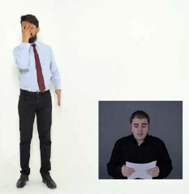

Vanessa Rojas Mesa
Valentina Valencia Yepes
Andrés Felipe Bedoya Agudelo
Eliana Acevedo Zabala
Beatriz Elena Monsalve Vélez
Oswaldo Gutiérrez Hurtado
Pablo Andrés Rivera Ceballos
Carlos Andrés Zambrano Mirandas
César Augusto Rodríguez Ledesma
Miltón César Rodríguez García
Código JavaScript para el libro: Joel Espinosa Longi, IMATE, UNAM.
Recursos interactivos: DescartesJS
Fuentes: Lato y UbuntuMono
Red Educativa Digital Descartes
Medellín (Colombia)
descartes@proyectodescartes.org
https://proyectodescartes.org
Proyecto iCartesiLibri
https://proyectodescartes.org/iCartesiLibri/index.htm
Esta obra está bajo una licencia Creative Commons 4.0 internacional: Reconocimiento-No Comercial-Compartir Igual.
LENGUAJE Y CIENCIA recopila los textos de escritura académica que los estudiantes y docentes del ITM y de otras instituciones de educación superior elaboran en su área de formación.
Publicación del Departamento de Idiomas de la Facultad de Artes y Humanidades
Alejandro Villa Gómez
Decano Facultad de Artes y Humanidades
Carlos Andrés Caballero Parra
Jefe del Departamento de Idiomas
Dora Alejandra Ramírez Vallejo
Facultad de Artes y Humanidades
Lenguaje y Ciencia/ Vanessa Rojas Mesa y Valentina Valencia Yepes. Editoras. -No.9 (2026). - Medellín: Institución Universitaria ITM. Facultad de Artes y Humanidades. Departamento de Idiomas, 2026. 202 páginas
1. Publicación seriada. 2. Escritura académica. 3. Lenguaje y Ciencia. I. Vanessa Rojas y Valentina Valencia Yepes (eds.) II. Institución Universitaria ITM. Facultad de Artes y Humanidades. Departamento de Idiomas. Catalogación en la publicación - Biblioteca ITM
Calle 73 No. 76A-354 Medellín-Colombia
(574) 4600727 ext. 5699
E-mail: lenguaje@itm.edu.co
www.itm.edu.co
Vanessa Rojas Mesa
Valentina Valencia Yepes
Editoras
Inspirarnos a través de las letras en la era digital puede parecer un desafío ambicioso en la actualidad; sin embargo, el ser humano puede conservar intacta su capacidad de asombro y reflexión, permitiéndose construir nuevos pensamientos críticos que enriquecen el saber. En este sentido, esta revista se configura como un espacio destinado a abrir caminos hacia el conocimiento mediante la investigación y las diversas formas de comprender el mundo: un mundo plural, dinámico y atravesado por innumerables experiencias construidas desde la argumentación y el diálogo de saberes..
Posiblemente, años atrás el acceso al conocimiento resultaba más complejo; hoy, en cambio, contamos con múltiples herramientas y formatos que facilitan la consulta, la interacción y la adquisición de nuevos aprendizajes. Por ello, esta revista busca fortalecer escenarios de enseñanza y divulgación a partir de propuestas innovadoras e incluyentes. La incorporación de contenidos relacionados con la Lengua de Señas Colombiana favorece la apertura hacia otras comunidades; asimismo, la presencia de artículos en diferentes idiomas posibilita el acercamiento a nuevas culturas y perspectivas. De igual manera, el reconocimiento de autores estudiantes y docentes, consolida un espacio plural y accesible para todos, comprometido con una educación integral y con el reconocimiento de la diversidad del otro. En este sentido, la diversidad cultural debe entenderse como un patrimonio común de la humanidad que favorece el intercambio, la creatividad y el enriquecimiento colectivo, pues, como señala la UNESCO (2001), constituye una fuente de desarrollo no solo económico, sino también
intelectual, afectivo, moral y espiritual. Así pues, la revista Lenguaje y Ciencia se proyecta como un escenario académico incluyente, abierto al diálogo de saberes y comprometido con la construcción de una sociedad más humana, crítica y consciente de la riqueza presente en las diferencias. Por consiguiente, la edición número 9 reúne una variedad de temáticas, tipologías y lenguas que reflejan dicha diversidad y riqueza universales presentes en la Institución Universitaria ITM.
Los textos publicados se agrupan en tres grandes secciones; la primera contiene cinco artículos producidos completamente en Lengua de Señas Colombiana (LSC) que nacen de la reflexión, la investigación y la práctica profesional de la Comunidad Sorda desde diferentes áreas como la lingüística, la traducción, la sociología y la educación. En especial, se destaca el artículo que presenta los resultados preliminares de la investigación desarrollada por docentes y estudiantes sobre el fenómeno de la zoomorfia en la LSC, realizada al interior del Semillero de Investigación-Creación en Terminología y Análisis Contrastivo (SIC/TAC) del programa de Interpretación y Traducción LSC-español (ITLSCE). A este, se suman reflexiones académicas acerca de metodologías efectivas y fundamentadas en recursos visuales de la LSC para mejorar los procesos de enseñanza de las matemáticas a niños sordos y la participación de personas sordas en competencias de deporte de alto rendimiento; así como discusiones alrededor de las tensiones presentes en los servicios de interpretación LSC-español y la reciente influencia de las redes sociales en la LSC considerada por la Comunidad Sorda como parte de su patrimonio cultural.
La segunda sección reúne artículos producidos por estudiantes y docentes de los programas de pregrado de la Institución Universitaria ITM. El artículo que abre la sección reflexiona sobre el impacto que tiene el aprendizaje de la lengua de señas durante la infancia en el desarrollo cognitivo e identitario del
individuo sordo. Los siguientes artículos reconocen el rol fundamental que tienen los profesionales en interpretación y traducción para la apertura de entornos laborales, educativos, legales, mediáticos e informativos más accesibles y adaptados para la Comunidad Sorda, y un artículo que desarrolla una perspectiva más artística de la LSC como lenguaje performático. Los artículos que cierran esta sección presentan contenidos que invitan al lector a dirigir su mirada a campos del conocimiento que lo llevarán a comprender la relación estrecha y positiva que conservan la ingeniería mecatrónica y la medicina para mejorar los procesos clínicos, así como el funcionamiento de las dinámicas tributarias para las iglesias en Colombia y a que se aproxime desde una perspectiva psicoanalítica a la obra de Lewis Carroll y a la película La habitación de al lado, del director Pedro Almodóvar, donde se consideran algunos factores que subyacen a las decisiones sobre adelantarse al final de la vida no solo desde una perspectiva biológica sino también desde la humanidad, la empatía y la dignidad.
La tercera sección se compone de un artículo en inglés que relata las experiencias docentes implementando el inglés como lengua extranjera en aulas de clase y su impacto en la internacionalización del currículo en el ITM. El número cierra presentando un compendio de producción académica que recoge y describe las trayectorias y la producción investigativa de los docentes del Departamento de Idiomas que hacen parte de la Línea de Investigación Lenguaje, Ciencia y Cultura de la Facultad de Artes y Humanidades del ITM. En conjunto, esta diversidad de voces, disciplinas y formatos refleja el carácter diverso de la producción académica y cultural que da vida a esta edición.
Referencia bibliográfica
UNESCO. (2001, 2 de noviembre). Declaración Universal de la UNESCO sobre la Diversidad Cultural. https://www.unesco.org/es/legal-affairs/unesco-universal-declaration-cultural-diversity
Cristhian Giovanny Gordillo
Marcel Cristopher García Hernández
Cristhian Giovanny Gordillo
Cristhian Giovanny Gordillo
Marcel Cristopher García Hernández
Cristhian Giovanny Gordillo
Resumen
La Lengua de Señas Colombiana (lsc), como lengua propia de la comunidad Sorda, presenta zoomorfismos y zoosomatismos fraseológicos nativos que, al traducirse al español de Colombia, plantean grandes retos traductológicos. Este proyecto propone un análisis contrastivo de este fenómeno desde un enfoque cualitativo y etnográfico que busca comprender cómo la imaginería animal y la referencia corporal operan como mecanismos de construcción de sentido altamente productivos y cargados de valor cultural para la comunidad sorda. La investigación fue desarrollada en tres fases; la primera consistió en la recolección de expresiones fraseológicas en la cual se recopilaron entre 17 y 20 zoomorfismos y zoosomatismos; posteriormente, estas fueron analizadas desde diferentes niveles de la lengua: fonología, morfología, semántica y pragmática. Los resultados derivados del análisis permitieron distinguir expresiones provenientes de la influencia del español y otras nativas de la LSC. También, se categorizaron las expresiones entre zoomorfismos y zoosomatismos, siendo estos últimos los más frecuentes, lo que evidencia que la LSC aprovecha su naturaleza viso-gestual e icónica para privilegiar una sola parte del animal en la construcción de metáforas, integrando el uso de clasificadores naturales de la lengua. Esta investigación es relevante porque se aborda el estudio lingüístico de la LSC sin la predominancia del español como lengua hegemónica.
Palabras clave
Fraseología, zoomorfia, zoosomatismo, somatismo.
Glosario
Referencia bibliográfica
Colombia. Congreso de la República. (1996, 11 de octubre). Ley 324 de 1996, por la cual se crean algunas normas a favor de la población sorda. Diario Oficial No. 42.899.
Dzuganova, R., Guketlova, F., Berbekova, F., & Oshroeva, K. (2019). Ethno-linguo-cultural specificity of zoonyms in comparative phraseological units. En D. K. Bataev et al. (Eds.), Social and Cultural Transformations in the Context of Modern Globalism (Vol. 76, pp. 845–850). Future Academy. https://doi.org/10.15405/epsbs.2019.12.04.112
Espejo O., M. B. y Piedra T., J. M. (2025). Los somatismos en la fraseología colombo-venezolana. Revista Científica Cuadernos de Investigación, 4, e59, 1-17. https://doi.org/10.59758/rcci.2025.3.e5
Carlos Andrés Zambrano Miranda
Carlos Andrés Zambrano Miranda
Referencia bibliográfica
Dorian, N. C. (1994). Purism vs. compromise in language revitalization and language revival [Purismo frente a compromiso en la revitalización y el renacimiento de las lenguas]. Language in Society, 23(4), 479-494. https://doi.org/10.1017/S0047404500018169
Hall, S. (2004). Lo local y lo global: Globalización y etnicidad. En Pensar en los postcoloniales: Ensayos sobre identidad y globalización (pp. 201-220). Editorial Jitanjáfora.
Flores Farfán, J. A. (2009). Variación, ideologías y purismo lingüístico: El caso del mexicano o náhuatl. Centro de Investigaciones y Estudios Superiores en Antropología Social.
Zimmermann, K. (2006). El problema del purismo en la modernización lingüística de lenguas amerindias Purismo - Site - INALI. En R. Terborg & L. García Landa (Eds.), Los retos de la planificación del lenguaje en el siglo XXI (Vol. 2, pp. 501–524). Universidad Nacional Autónoma de México / CELE Roland Terborg.
Oswaldo Gutiérrez Hurtado
Oswaldo Gutiérrez Hurtado
Resumen
En los servicios de interpretación de Lengua de Señas Colombiana (LSC)-español suelen surgir diferentes tensiones entre los usuarios del servicio y otros actores involucrados. Este artículo aborda algunas de estas tensiones, sus causas y propone reflexiones y estrategias para su gestión y resolución. De esta manera, busca aportar elementos que permitan a los intérpretes afrontar estas situaciones de manera profesional y contribuir al fortalecimiento de los servicios de interpretación LSC-español
Palabras clave
Formación; Comunidad Sorda; interpretación; agencia.
Referencia bibliográfica
Nord, C. (2009). El funcionalismo en la enseñanza de traducción. Mutatis Mutandis. Revista Latinoamericana De Traducción, 2(2), 209–243. https://doi.org/10.17533/udea.mut.239
Schlosser, M. (2019). Agency. En Zalta, E. (ed). The Stanford Encyclopedia of Philosophy. https://plato.stanford.edu/archives/win2019/entries/agency/.
Jorge Adrián Giraldo González
Jorge Adrián Giraldo González
Resumen
En el territorio colombiano, son varias las instituciones educativas de educación básica y media que cuentan con estudiantes Sordos, los cuales, a menudo, presentan dificultades y deficiencias en el aprendizaje de las matemáticas, lo que ha sido demostrado estadísticamente. Al analizar a profundidad las posibles causas de esta problemática, las reflexiones derivadas de esta investigación consideran efectos negativos en el aprendizaje de niños Sordos que se deben a la falta de un perfil adecuado que asuma la labor de enseñar matemáticas a esta población. Por un lado, menciona que contar con docentes de matemáticas oyentes, que enseñan desde su lengua y cultura, limita el aprendizaje de estos estudiantes; asimismo, señala que un docente Sordo que reconoce las particularidades de la Lengua de Señas Colombiana (LSC) y los saberes propios de la comunidad sorda, puede no contar con los conocimientos suficientes sobre los procesos matemáticos, lo que también limita su capacidad de transmitirlos. Es por ello por lo que este artículo propone una estrategia didáctica basada en el uso de los dedos y rasgos de la LSC, llamada Diseñarman, como recurso que favorece el desarrollo de competencias relacionadas con el aprendizaje de las matemáticas pertinente para la educación de niños sordos.
Palabras clave
Matemáticas; educación para sordos; ajustes razonables; metodología; Diseñarman.
Referencia bibliográfica
Dessbesel, R. da S., Silva, S. de C. R. da, & Shimazaki, E. M. (2024). Mathematics teaching and Sign Language: A mediated relationship in deaf education. Revista Internacional de Pesquisa em Educação Matemática, 14(5), 1–15. https://doi.org/10.37001/ripem.v14i5.3766
López Guarín, R. A., Giraldo González, J. A., Suárez Hincapié, I. E., & Carmona Ramírez, L. H. (2022). Diseño metodológico universal para la alfabetización e inclusión en matemáticas de estudiantes sordos. Universidad Católica de Manizales.
Riaño, T. (2020). Un estado de la investigación sobre la inclusión en el aula de matemática de personas con limitación auditiva durante los últimos diez años en Colombia. Universidad Pedagógica Nacional
Maria Camila Correa Restrepo
Maria Camila Correa Restrepo
Resumen:
En las competencias deportivas, los atletas sordos suelen enfrentarse a una serie de barreras que limitan su participación. Por un lado, las competencias dirigidas a deportistas con discapacidad no contemplan categorías para la participación de población sorda; por otro lado, las competencias deportivas convencionales no siempre cuentan con las adaptaciones necesarias para garantizar su participación en condiciones adecuadas. Por consiguiente, el presente artículo señala la importancia de implementar ajustes y estrategias de adaptación para favorecer la participación de la población sorda en competencias deportivas convencionales de alto rendimiento y, a partir de una experiencia exitosa de una atleta sorda en Medellín que ha conseguido resultados destacados en competencias, describe algunas adaptaciones implementadas por su entrenador que pueden ser replicadas con otros deportistas sordos.
Palabras clave
Deporte; competencia; adaptación; entrenamiento.
Referencia bibliográfica
Akınoğlu, B., & Kocahan, T. (2019). The effect of deafness on the physical fitness parameters of elite athletes. Journal of Exercise Rehabilitation, 15(3), 430–438. https://doi.org/10.12965/jer.1938100.050
Dally Ortiz QuinteroMagister en Hermeneútica Literaria, docente de español como segunda lengua para personas sordas en la Institución Educativa Francisco Luis Hernández Betancur desde el 2010, docente de cátedra del ITM desde el 2017
Valentina Ramírez EcheverryTecnóloga en informática musical del ITM, licenciada en Educación Especial de la UdeA, intérprete de Lengua de Señas colombiana y candidata a Magister en Educación Inclusiva e intercultural de la UNIMINUTO.
Dally Ortiz Quintero
Valentina Ramírez Echeverry
Resumen
La evolución de la cognición de un sujeto está intrínsicamente ligada al aprendizaje de la lengua en la primera infancia, porque es el lenguaje el que posibilita la construcción de la identidad tanto colectiva como individual. La lengua de señas, que presenta las mismas características lingüísticas que los lenguajes orales, es el código propio de las personas sordas y responde a sus características particulares permitiéndoles tanto el autorreconocimiento, como las interacciones comunicativas efectivas con el entorno, pero para que esto se lleve a cabo es necesario que los sordos tengan contacto con su lengua natural desde que la familia recibe el diagnóstico. Sin embargo, factores como los prejuicios, el desconocimiento y la negación implícita en el duelo experimentado por el núcleo familiar, cuando descubren que su hijo ha nacido con limitaciones auditivas, impiden este acercamiento dando como resultado la ralentización de su desarrollo cognitivo y el desconocimiento de las normas y costumbres propias de su contexto cultural.
Palabras clave: sordos, cognición, lengua de señas, duelo, cultura.
Introducción
La identidad de una persona se encuentra unida tanto al territorio como a la memoria, esta última como compañera imprescindible de la cultura permite que conozcamos y nos reconozcamos en aquello que recuerdan y nos relatan nuestros antecesores. Los griegos ya lo sabían hace más de 3.000 años y lo plasmaron en su literatura. Al inicio de La Odisea, Ulises Rey de Ítaca es requerido por los reyes más poderosos de Grecia para ir a la guerra contra Troya (exhortación sin posibilidad de negación, pues hacía parte de su código de honor). Telémaco su único hijo es aún un bebé, el encuentro bélico dura diez años y el regreso de su padre atravesando el Ponto, otros diez. Para entonces, la isla se encontraba en una condición política y económica compleja, pero el ya joven Telémaco no podía heredar el lugar de su padre, ya que no detentaba los relatos de sus antepasados; era Ulises quien debía trasmitírselos y su larga ausencia había cubierto la memoria del hijo con el manto de la Lethe (el olvido), vivía en un presente sin pasado y sin identidad, su madre Penélope en el poema homérico, describe así su realidad ante los dioses “mi hijo, inocente desconocedor de obras y palabras” (Homero, Canto IV, 1971, p.50). Muchas personas sordas en la actualidad son Telémacos. En la mayoría de los casos, cuando un núcleo familiar se da cuenta de que su hijo es sordo, no lo acercan a la lengua de señas y no la aprenden ellos tampoco, y así desde su infancia se le niega el acceso a la cultura de su entorno inmediato y a su identidad, no por un Ulises inubicable, sino por una familia en negación.
Cuerpo Argumentativo
La sordera, según la Organización Mundial de la Salud, ocurre cuando se registra “una pérdida superior a 35 decibelios” (OMS, 2023), sus causas en la etapa prenatal y perinatal van desde el contagio de la madre con un virus como el de la rubéola y factores hereditarios cuando es congénita, o a meningitis e hiperbilirrubinemia, entre otros, cuando es adquirida. Pero independiente de la causa o momento de la adquisición de la sordera, para la familia inmediata del infante esta condición representa una alteración que se atraviesa en el evento venturoso del nacimiento del niño y que requiere de un proceso de duelo, en tanto se percibe como una pérdida en relación con el mundo circundante, aquel colectivo que no padece la limitación y cuyo imaginario desde la antigüedad ha calificado esta condición con un sesgo negativo vinculado a la sanción moral, en palabras de Egea y Sarabia, citados por López “Durante gran parte de la historia ha sido frecuente asociar la discapacidad a una visión animista, relacionada con el castigo divino o a la intervención del Maligno” (2019, p.837).
Ese duelo, no siempre atravesado de manera consciente, tiene tres grandes fases: el inicio o primera etapa asociado con el rechazo y la incredulidad, la segunda marcada por un estado depresivo y la tercera en la que los sujetos evalúan lo ocurrido y se adaptan a la nueva situación (Meza, García, Torres, et al, 2008,). En la mayoría de los casos ese proceso en las familias con niños sordos se detiene en los dos primeros periodos y mientras eso ocurre, el infante se encuentra en un ostracismo, pues no se le permite conocerse y reconocer el mundo mediante ningún código, en su caso su primera lengua que sería la de señas.
En ese estancamiento en las primeras etapas del duelo, en la mayoría de los casos se da inicio a la búsqueda de “seudoestrategias”,
que permitan al infante escuchar y aprender a hablar; es un largo camino que empieza con el diagnóstico y continúa con la búsqueda de mejores galenos, entidades milagrosas o exámenes novedosos y que termina en los vendedores de lo etéreo (que a veces son producto de la formación académica y otras de la empírica). Esta ruta añade más tiempo de incomunicación al niño y con ello el retraso en el inicio de su desarrollo cognitivo.
Se debe recordar que el lenguaje en la primera infancia no solo se constituye en un elemento primordial para la evolución de la cognición del sujeto, sino que es la base que permite que encaje en la vida colectiva de su entorno; de no ser así, siempre y para siempre será el diferente por su interacción inadecuada con los otros, entendiendo esa inadecuación como aquello que no es pertinente al momento y al lugar.
La estandarización del lenguaje oral nos ha llevado a menguar la importancia y relevancia de otras formas de comunicación, que por ser usadas por minorías lingüísticas soportan la mirada minimizadora de las mayorías; considerar el lenguaje oral como la única forma de interacción es una simplificación, que homogeniza la diversidad de la comunicación humana posibilitada por el lenguaje. Lenguaje para el que los teóricos se han planteado diversas definiciones, pero que pueden concatenarse la mayoría de ellas bajo las premisas que exponen Belinchon, Igoa y Riviere “el lenguaje puede interpretarse como un sistema compuesto por unidades -los signos lingüísticos- cuya organización interna puede ser objeto de una descripción estructural o formal” (2005, p. 19).
La anterior definición agrupa no solo a las lenguas orales, sino también a la lengua de señas, pues si retomamos las dos partes que conforman el signo lingüístico, significado como contenido mental y significante como expresión del mismo, podemos ver que son dos caminos (oral o signado) que conducen a la misma representación,
que no necesariamente está presente y explícita al momento del acto comunicativo, sino que es su capacidad de remitir a un significado no presente lo que encarna su potencial simbólico: un semáforo no denota tres colores emitidos con luces, connota los ejercicios de parar, seguir o prepararse para las dos acciones anteriores. El significado no se agota en la palabra o en la seña, es necesario el conocimiento cultural del contexto para que se haga efectiva la comunicación, pues con lenguaje es que podemos remitirnos a un momento que no es aquí, ni ahora, permitiendo las reflexiones de lo que ocurrió y las planeaciones de lo que ocurrirá.
La anterior abstracción de la realidad requiere del uso y manejo de un código, que no presente ningún tipo de obstáculo para el usuario, de manera que este pueda elegir de un amplio corpus existente (el vocabulario de cada idioma), los términos necesarios y pertinentes que le permitan elaborar una idea precisa, que sea efectiva en la interacción comunicativa y adecuada a la misma. El mundo de cada individuo se constituye con las palabras y las combinaciones entre estas que él conozca, las limitaciones en el manejo y uso de la lengua implican restricciones en el pensamiento y por ende en la expresión perceptible del mismo, oral, escrita o señada. Si una persona sorda desde su primera infancia no tiene acceso total a una lengua, que no presente barreras de acuerdo con sus características psicofisiológicas (Rosso, 2007) su desarrollo cognitivo y su aprehensión del entorno se verán seriamente afectados.
De igual forma y unidas al desarrollo cognitivo de índole académico, las costumbres -como manifestaciones externas de la cultura- se trasmiten también por medio del lenguaje y en ocasiones guardan una mínima relación con los asuntos pragmáticos del mismo, porque la comunicación trasciende la trasmisión de información, ¿qué interpretación lógica desde lo biológico podríamos darle al hecho de ingerir un almuerzo, preparado por un miembro
querido de nuestro entorno emocional, aun cuando ya habíamos comido y no nos apetecía? Solo la explicación social tiene cabida, pues nuestros instintos biológicos nos convocan a comer solo cuando tenemos hambre, pero son las deferencias empáticas (construidas con lenguaje) las que nos llevan a ingerir alimentos sin ningún apetito. En consecuencia, calificar negativamente el comportamiento de una persona, por no recibir esa vianda sin que en ella se encuentren ancladas las consideraciones sociales anteriormente nombradas, no la hace a ella inadecuada; evidencia que su entorno familiar primario no ejerció su labor de forma apropiada “la posesión de un lenguaje, es decir la posesión de un código de signos (…) permite relacionar señales físicas con aspectos de la realidad que no son señales en sí mismas” (Belinchon, 2005, p.26), al no existir desarrollo del lenguaje en la primera infancia sobreviene una ralentización del proceso cognitivo y al no poder nombrar el mundo circundante, y no posibilitar formas de interacción con el contexto y cosmovisiones culturales diferentes, se da como resultado la inadecuación social. No es la lengua de señas la que hace diferente al sordo, es la falta de ella.
La lengua de señas, como habíamos afirmado anteriormente, “es una lengua que posee las mismas propiedades que cualquier otra lengua oral (fonología, morfología, sintaxis, semántica y pragmática) pero en una modalidad visual” (García, 2002, p.90) modalidad que permite cambiar el concepto de fonología (lo auditivo) por querología (lo visual) en la que los gestos ayudan a potenciar esta lengua y es aprendida por los infantes de una manera similar a la de las lenguas orales: por exposición social y contacto cotidiano. En este código adquiere relevancia la expresión corporal, pero también sucede con la lengua oral; la importancia que adquieren en cualquier interacción comunicativa, los gestos y la distancia entre los interlocutores, por nombrar solo algunos de los elementos no verbales y no condicionados al contexto.
En el plano de la estructuración del lenguaje en el cerebro encontramos que en todas las lenguas ocurre el mismo proceso para formular una oración lo primero es tener una idea, que se genera a través de conceptos en el sistema semántico. Posteriormente en el área de Wernicke se accede al léxico con el objetivo de seleccionar las palabras que representen los conceptos (González y Hornauer, 2014, p. 147).
La descripción anterior, alude solo al inicio del procedimiento que el cerebro lleva a cabo para emprender el proceso comunicativo mediante el uso de una lengua, que como código sistematizado y arbitrario permite entre otras, la obtención de abstracciones, pasando al campo representativo al que alude González, que requiere de un corpus de términos al que el sujeto debe haber accedido con anterioridad y ante la ausencia de este bagaje no habría forma de iniciar ese proceso. Añade el autor que después de la selección de términos, en el área de Broca ocurre la elección de verbos, además del procesamiento gramatical y en la circunvolución supramarginal se escogen los fonemas. Todo esto viaja al lóbulo de la ínsula donde se convierte en información motora (González y Hornauer, 2014). ¿Cuánta actividad cognitiva se pierde cucuando el grupo familiar decide no poner a su infante sordo en contacto directo con su primera lengua?
Ante la ausencia de estimulación lingüística, que no solo limita, sino que en ocasiones anula el acto comunicativo, no existe una interacción con el sujeto sordo: si el emisor no puede expresar en un código común, de forma clara y efectiva lo que necesita o requiere, no se puede esperar del receptor una réplica adecuada al momento y al lugar. De igual manera, la expresión apropiada de las emociones y los sentimientos parte del autorreconocimiento y la construcción del yo, que de nuevo se hace con lenguaje, a partir entre otras, de las interacciones cotidianas familiares y sociales inherentes a cada lugar geográfico:
fórmulas de cortesía en los duelos, las comidas y los cumpleaños, por ejemplo. Al carecer de ese equipaje cultural el sujeto sordo puede parecer inoportuno, aunque el término acertado sería mal-educado, pues la responsabilidad de este desconocimiento recae en el núcleo garante de la trasmisión de esa información, que es el que mal-educa ¿Cómo se puede reflexionar sobre un comportamiento inadecuado, si se desconocen todos los elementos sociales, culturales, familiares, antropológicos y políticos que esa acción implica? En términos de Belinchon, Igoa y Riviere
Conclusión
En resumen, la sordera como condición no implica un retraso en el desarrollo de la cognición, es la exposición tardía al código lingüístico lo que ocasiona esta ralentización, que va de la mano de la falta de autoconocimiento del sujeto y del reconocimiento del entorno cultural. El hijo de Ulises tuvo que emprender un viaje que, aunque aparentemente estaba encaminado a la búsqueda de indicios sobre el paradero de su padre, realmente era el inicio de su construcción interna como legitimo heredero del rey, porque el lenguaje no solo posibilita la interacción con el medio, es lo que permite la relación con nosotros mismos, que nos narremos, que nos construyamos como Telémacos, que viajemos hacia adentro para poder ser.
El uso de su lengua desde la primera infancia garantiza al niño sordo no solo ese desarrollo de su cognición -indispensable para su avance posterior-, sino la conexión con su entorno familiar y social. La carga prejuiciosa acerca de la condición de la sordera y con ella del código señante, el estancamiento en el proceso del duelo y el desconocimiento lingüístico acerca de la lengua de señas, dan como resultado un infante que ignora no solo el qué y el porqué de su contexto inmediato, sino el cómo y el cuándo. Querer que ese niño sea parte de lo que culturalmente se concibe dentro del estándar de la normalidad, es comprensible sólo desde la mirada de una sociedad cargada de recelos, pero ese seguir la corriente de lo socialmente aceptado afecta profundamente la vida presente y futura del niño sordo.
El esfuerzo para que las personas con limitaciones auditivas accedan de forma igualitaria a todas las esferas de la sociedad, debe empezar en su círculo familiar inmediato, sin embargo, nos enfrentamos a los prejuicios y al ‘deber ser’ social y colectivo que dictan la normalización del otro diferente, un contradicho en una época que enarbola las banderas de los derechos individuales.
Referencias bibliográficas
Belinchon, M., Igoa, J., Riviere, A. (2005). El concepto de lenguaje. En Psicología del lenguaje: investigación y teoría. Universidad Nacional de la Plata, (p.p. 17-54). Belinchón Ígoa Rivière 1992 - El concepto de lenguaje - Aporte de Juan Daniel Wol.pdf [Fecha de consulta: diciembre 12 de 2024].
García Orza, J. (2002). Neuropsicología cognitiva de la lengua de signos: una piedra de toque para el estudio del lenguaje, la visión, las emociones faciales y el movimiento. Revista de psicología general y aplicada: Revista de la Federación Española de Asociaciones de Psicología, Vol. 55, Núm. 1, 89-104. https://dialnet.unirioja.es/servlet/articulo?codigo=260170 [Fecha de consulta: enero 9 de 2025].
González, R., Hornauer-Hughes, A. (2014). Cerebro y lenguaje. Revista Hospital Clínico de la Universidad de Chile, Vol. 25, 143-153. https://www.academia.edu/25591713/_Gonz%C3%A1lez_y_Hornauer_Hughes_2014_Cerebro_y_lenguaje [Fecha de consulta: enero 15 de 2025].
Homero. (1971). La Odisea Rapsodia cuarta: Lacedemonia. Canto IV | La Odisea
López Bastías, J. (2019). La conceptualización de la discapacidad a través de la historia: una mirada a través de la evolución normativa. Revista de la Facultad de Derecho de México, Vol. 69 Núm. 273-2, 835-855. https://doi.org/10.22201/fder.24488933e.2019.273-2
Meza, E., García, S., Torres, A., et al. (2008). El proceso del duelo. Un mecanismo humano para el manejo de las pérdidas emocionales. Revista Especialidades Médico-Quirúrgicas. Vol. 13(1), 28-31. https://www.medigraphic.com/pdfs/quirurgicas/rmq-2008/rmq081g.pdf [Fecha de consulta: enero 15 de 2025].
Organización Mundial de la Salud. (2023). Centro de Prensa: Sordera y pérdida de la audición. https://uprrp.libguides.com/c.php?g=985694&p=7256116
Rosso, M. (2013). Las lenguas de señas: una aproximación al conocimiento de sus características y propiedades. Revista Síntesis. N 4. https://revistas.unc.edu.ar/index.php/sintesis/article/view/12246 [Fecha de consulta: enero 15 de 2025].
Tania Vanessa Ordoñez BolañosEstudiante del programa Interpretación y Traducción de Lengua de Señas Colombiana-español, Institución Universitaria ITM. Correo electrónico institucional: taniaordonez1155244@correo.itm.edu.co, tanobo2306@gmail.com
Tania Vanessa Ordoñez Bolaños
“La inclusión laboral es una forma de derribar las barreras de una sociedad excluyente”- Autoría propia
Resumen
El objetivo de este artículo es demostrar que el intérprete de lengua de señas colombiana (LSC) desempeña un papel crucial como puente comunicativo en cualquier ámbito laboral, lo cual facilita la participación activa y equitativa de la comunidad sorda. Para esto, se hizo una búsqueda bibliográfica del tema en cuestión, en la que se abordaron aspectos como la inclusión laboral y el impacto del rol del intérprete en la inclusión laboral. Con ello se demostró que la participación del intérprete de lengua de señas es fundamental para garantizar una comunicación efectiva entre las personas sordas y oyentes en el entorno laboral. Su intervención no solo facilita el entendimiento mutuo, sino que también promueve un cambio positivo en las actitudes de quienes interactúan con personas con discapacidad y fomenta un ambiente de mayor inclusión y respeto.
Palabras clave: Inclusión laboral, intérprete de LSC, comunidad sorda, personas oyentes.
Introducción
La inclusión laboral es equidad e igualdad de oportunidades para que personas en situación de vulnerabilidad logren conseguir, conservar y crecer en un empleo. Esto requiere proporcionar los apoyos necesarios y realizar ajustes razonables que permitan su plena integración. En el caso de la Comunidad Sorda, uno de estos ajustes esenciales es la asignación de intérpretes de LSC por parte de los empleadores, quienes actúan como mediadores entre las personas Sordas y las personas oyentes. En este contexto, el intérprete de LSC desempeña un papel crucial como puente comunicativo, que facilita la participación activa y equitativa en el ámbito laboral de la comunidad sorda. Sin embargo, este proceso exige el compromiso y la concienciación tanto de las autoridades como de la sociedad en general y de las instituciones académicas. Promover la diversidad, garantizar la equidad y fomentar la inclusión son acciones fundamentales para restaurar la dignidad de los sectores históricamente excluidos.
Cuerpo argumentativo
En la actualidad, el desarrollo y la transformación de la sociedad han impulsado la creación de políticas públicas destinadas a beneficiar a las comunidades con necesidades especiales, incluidas las personas con discapacidad auditiva, con acciones para promover la igualdad de oportunidades en múltiples esferas sociales. Esta necesidad surge a raíz de que, en su mayoría, la sociedad está estructurada para favorecer el desarrollo integral de personas que poseen todas sus facultades cognitivas y físicas en óptimas condiciones. Esto ha dejado excluidas a aquellas comunidades que enfrentan situaciones de discapacidad, ya sea de tipo físico, psíquico, cognitivo o sensorial (Chacón, 2020).
Desde hace muchos años, Colombia también ha buscado afianzar la eliminación de barreras para las minorías culturales y lingüísticas a través de la creación de diferentes leyes que fomentan su inclusión en la sociedad. En el ámbito laboral, las principales normas colombianas que promueven la inclusión son la Ley 361 de 1997, la Ley 1618 de 2013 y la Ley 1429 de 2010. Estas buscan desarrollar estrategias para la incorporación social de las personas que presentan alguna discapacidad, el acceso pleno a sus derechos y la provisión de estímulos a las organizaciones que se acogen a las normativas existentes.
Una de las estrategias que implementa la inclusión laboral es el empleo con apoyo, el cual, según Piñeres (2018), ofrece oportunidades laborales a las personas más vulnerables y brinda la asistencia necesaria para que tengan éxito en el mantenimiento de su empleo en el mercado laboral abierto. Para el caso de la comunidad sorda, el intérprete de LSC desempeña el papel de apoyo y su labor contribuye a eliminar las barreras comunicativas y facilitar un intercambio efectivo; esto fortalece tanto las capacidades internas como externas de las personas sordas, y promueve su desarrollo psicosocial y su integración plena en la sociedad.
La lengua de señas es reconocida como el idioma oficial de la Comunidad Sorda a nivel mundial y constituye una herramienta esencial para la comunicación tanto entre las personas que forman parte de esta comunidad como con aquellas externas a ella. Sin embargo, para que lo último sea efectivo, es indispensable la presencia de un intérprete de lengua de señas. Este profesional tiene la capacidad de traducir y transmitir la información de manera precisa y accesible. El intérprete de Lengua de Señas Colombiana - español es definido por la Ley 982 de 2005 en su artículo 1 Numeral 25 como:
En relación con lo anterior, se puede observar que el intérprete de LSC cumple con la función de ser un apoyo en el proceso de inclusión laboral, puesto que tiene la responsabilidad de actuar como puente comunicativo entre las personas sordas y oyentes, facilitar la comunicación de manera neutral y asegurar el acceso equitativo a la información y participación (Reategui, 2019).
No obstante, para desempeñar sus funciones de manera efectiva, el intérprete de LSC no solo debe dominar el idioma de manera fluida, sino también poseer una serie de cualidades esenciales. Entre ellas destacan la flexibilidad, el autocontrol, la neutralidad profesional y la confidencialidad. Además, es fundamental que el intérprete de LSC cuente con valores éticos como el compromiso, la aceptación, la empatía y la humildad (Velandia y Nieto, 2021).
Sumando lo anterior, el intérprete de LSC debe adaptarse a la cultura de la comunidad sorda para brindar un servicio integral; asimismo, es fundamental que se prepare y planifique cuidadosamente la manera en que ejecutará su labor, con el objetivo de garantizar un servicio de calidad y transparencia. Solo a través de este compromiso podrá contribuir de forma significativa a la transformación positiva de la vida de las personas sordas.
En el ámbito laboral, el intérprete de LSC desempeña un papel fundamental al facilitar la comunicación entre el empleador y la persona sorda; además, su labor es clave en el apoyo al aprendizaje, ya que participa activamente en los espacios de capacitación
ofrecidos por la empresa, y contribuye al desarrollo profesional y al crecimiento integral de las personas sordas.
En este sentido, el intérprete de LSC hace un aporte significativo al contribuir a la reducción de las brechas laborales; esto es particularmente importante, ya que las personas sordas a menudo enfrentan una competencia desigual en el mercado laboral, debiendo competir con personas oyentes en un entorno regido principalmente por competencias de comunicación oral. La intervención del intérprete ayuda a nivelar estas diferencias, facilita la inclusión laboral y brinda igualdad de oportunidades (Aguirre, 2021).
Por otro lado, el intérprete de LSC es una herramienta importante al momento de crear ambientes inclusivos en la empresa, ya que participa en la formación de las personas oyentes.
El trabajo que realiza el intérprete de LSC genera un impacto positivo en la inclusión laboral, debido que facilita el acceso a un trabajo a comunidades históricamente excluidas. Darmstadter (2015, citado por Viloria 2020) agrega que:
Lo anterior refleja que el intérprete de LSC contribuye a mejorar la productividad y la participación de las personas sordas de forma holística. Su intervención no solo facilita la comunicación, sino que promueve un enfoque integral que abarca aspectos emocionales, cognitivos y sociales de la misma. Esta situación propicia la autonomía y el empoderamiento de las personas sordas, gracias a lo
cual pueden desarrollar su máximo potencial en sus respectivas áreas de desempeño.
De igual manera, el intérprete de LSC desempeña un papel clave en la mejora de la imagen empresarial, y hace que la organización se vuelva más competitiva. Las empresas que incluyen a personas con discapacidad en su nómina no solo promueven la inclusión social, sino que también convierten esta práctica en una ventaja estratégica. Esto se traduce en beneficios como la reducción de costos, el incremento de ingresos y el acceso a incentivos fiscales. Además, al adoptar estas políticas, la empresa se posiciona ante la sociedad como una organización socialmente responsable, comprometida con generar aportes significativos al país que trascienden lo económico (Muñoz, 2021).
Sin embargo, a pesar de todas las ventajas que tiene la participación de intérpretes de LSC en la inclusión laboral y de que existan normas que respalden su función, la exclusión histórica de las poblaciones vulnerables en los diferentes lugares del país hace que exista una ausencia de integración real de los mismos. Por tal razón, es necesario que se promueva una efectiva implementación de las políticas públicas determinadas a nivel nacional, para que las personas dedicadas a la interpretación puedan cumplir con los objetivos establecidos en beneficio de la comunidad sorda (Viloria, 2020).
Conclusión
Es así como se puede afirmar, luego de haber abordado aspectos tan importantes como la inclusión laboral y el rol del intérprete de LSC en este ámbito, que es indispensable su participación para garantizar una comunicación efectiva entre las personas sordas y oyentes en el entorno laboral. Su intervención no
solo facilita el entendimiento mutuo, sino que también promueve un cambio positivo en las actitudes de quienes interactúan con personas con discapacidad, y fomenta un ambiente de mayor inclusión y respeto.
Referencias bibliográficas
Aguirre Abad, A. J. (2021). El ser y el hacer desde el silencio: una aproximación a la inclusión laboral de personas sordas en la ciudad de Cuenca. https://rest-dspace.ucuenca.edu.ec/server/api/core/bitstreams/0729e76c-72b6-469a-ac49-dae7f7308cda/content
Chacón Rojas, H. A. (2020). Herramientas para la inclusión laboral de personas con discapacidad auditiva en Colombia. https://repository.unad.edu.co/bitstream/handle/10596/37481/hachaconr.pdf?sequence=1&isAllowed=yCongreso de la República de Colombia. (2 de agosto de 2005). Ley 982 de 2005: Por la cual se establecen normas tendientes a la equiparación de oportunidades para las personas sordas y sordociegas y se dictan otras disposiciones. Diario Oficial No. 45.
Piñeres Castro, J.A. (2018). Competencias laborales que la empresa privada del municipio de Cartago -Valle del Cauca demanda de la comunidad sorda como requisito que posibilite su inclusión en el entorno laboral del sector. Universidad del Quindío. Facultad de Ciencias económicas y administrativas. https://bdigital.uniquindio.edu.co/server/api/core/bitstreams/959123ae-582e-400f-b9cd-bd667def5207/content
Reategui Ríos, S. (2019). La importancia del intérprete de lengua de señas en los servicios públicos de Trujillo, Perú. https://core.ac.uk/download/pdf/326609691.pdf
Velandia, M.A. y Nieto, J. C. (2015). La subjetividad del intérprete de lengua de señas colombiana – español en el contexto educativo de Bogotá. Universidad Pedagógica Nacional, Fundación Centro Internacional de Educación y Desarrollo Humano CINDE. http://repository.pedagogica.edu.co/bitstream/handle/20.500.12209/800/TO-18344.pdf?sequence=1&isAllowed=y
Viloria Peñaranda, C. A. (2020). Debilidades del proceso de inclusión laboral en el municipio de Barrancabermeja: el caso de las personas con discapacidad auditiva. https://repository.unab.edu.co/handle/20.500.12749/12446
León Muñoz, V. M. (2021). Como se puede beneficiar tributariamente una empresa a la hora de contratar personas con discapacidad (Doctoral dissertation, Corporación Universitaria Minuto de Dios). https://repository.uniminuto.edu/server/api/core/bitstreams/e11b0cab-9a6d-45ef-810e-127a809c1d63/content
Ley 361 de 1997. Por la cual se establecen mecanismos de integración social de las personas con limitación y se dictan otras disposiciones. https://www.funcionpublica.gov.co/eva/gestornormativo/norma.php?i=343
Ley 1618 de 2013. Por medio de la cual se establecen las disposiciones para garantizar el pleno ejercicio de los derechos de las personas con discapacidad. https://www.funcionpublica.gov.co/eva/gestornormativo/norma.php?i=52081
Ley 1429 del 2010. Por la cual se expide la Ley de Formalización y Generación de Empleo. https://www.funcionpublica.gov.co/eva/gestornormativo/norma.php?i=39430
Ley 982 del 2005. Por la cual se establecen normas tendientes a la equiparación de oportunidades para las personas sordas y sordociegas y se dictan otras disposiciones. https://www.funcionpublica.gov.co/eva/gestornormativo/norma.php?i=17283
Felipe Ramírez GaviriaEstudiante del programa Traducción e Interpretación Lengua de Señas Colombiana-Español de la Institución Universitaria ITM. Correo electrónico institucional: feliperamirez1154886@correo.itm.edu.co Correo personal: feliperamirezg27@gmail.com
Felipe Ramírez Gaviria
“La lengua de señas no es solo un medio de comunicación, es una forma de existir en el mundo” - Anónimo
Resumen
El presente artículo pretende argumentar a favor de la necesidad de que los contenidos televisivos cuenten con intérprete profesional en Lengua de señas colombiana (LSC) para garantizar un mejor acceso y disfrute por parte de la Comunidad Sorda, teniendo en cuenta los desafíos actuales de esta profesión. Esto a partir de una revisión bibliográfica que aborda temas relacionados con la interpretación en LSC y la televisión, así como desafíos actuales de la misma, problematizando la profesionalización del intérprete y la calidad del servicio; teniendo en cuenta la percepción de la Comunidad Sorda. De este modo, se concluye que, en la televisión, un perfil fundamental para el acceso y disfrute de las personas Sordas es el intérprete de LSC, un profesional preparado que responde a las necesidades del medio..
Palabras clave:Intérprete de LSC (ILSC), televisión, accesibilidad, Lengua de Señas Colombiana (LSC).
Introducción
En el siglo XXI, la televisión es una de las principales fuentes de información y entretenimiento para el mundo en el que vivimos, allí se presentan contenidos como los noticieros, las telenovelas, programas deportivos, entre otros. En Colombia, la falta de accesibilidad es una problemática significativa, pues excluye a personas con discapacidad del mismo disfrute, por ejemplo, la mayoría de contenidos audiovisuales dependen del componente auditivo para ser comprendidos en su totalidad, un elemento al que las personas Sordas no tienen acceso. Para tratar de solucionar esta problemática, se han implementado diversas estrategias como los subtítulos o el Sistema “Closed Caption”, los cuales permiten acceder a los contenidos desde el texto escrito. Sin embargo, estos no resultan suficientes para garantizar acceso pleno a las personas de la Comunidad Sorda que son usuarias de la Lengua de Señas Colombiana, ya que el español escrito puede representar un problema al ser una segunda lengua o incluso una lengua desconocida. Entonces, como medida alternativa, e idealmente principal, es necesario que los contenidos televisivos cuenten con intérprete profesional en LSC para garantizar un mejor acceso y disfrute por parte de la Comunidad Sorda, teniendo en cuenta los desafíos actuales de esta profesión, como lo son la falta de dominio de la LSC, las problemáticas en simultáneo, el español signado y/o el tamaño del recuadro del intérprete.
Cuerpo argumentativo
Es fundamental conceptualizar quién es la figura principal de este texto y cómo se desenvuelve. El intérprete de Lengua de Señas (en adelante ILS) es una persona que se desenvuelve en dos lenguas, y dos culturas, actuando como mediador lingüístico. En la
interpretación, en general, tanto en lenguas habladas como señadas, el intérprete necesita de gran capacidad de memoria, velocidad de producción y manejo tanto de la lengua meta como de la lengua origen. Su función consiste en transferir un mensaje de una lengua inicial a una lengua de destino, distinguiendo allí la intención, el sentido, el contexto y uso social de las palabras o frases, realizando a su vez una correcta traslación de la estructura gramatical y sintáctica.
Sin embargo, saber LSC no es lo mismo que saber interpretarla, así como pasa con cualquier otra lengua. Este trabajo, que es complejo, no debería ser realizado por cualquier persona que comprenda o tenga habilidades en ambas lenguas; pues, la interpretación no se limita a una traducción literal de la información, sino que tiene en cuenta las culturas que interactúan, y se rige por la ética del campo profesional; aspectos a los que seguramente una persona no-intérprete no les prestaría la atención que ameritan. Entonces, de allí radica la importancia de tener programas profesionales que formen nuevos y competentes intérpretes; en el caso de la LSC, como los tienen el Institución Universitaria ITM en Medellín o la Universidad El Bosque en Bogotá, y de este modo considerar el reconocimiento oficial de la profesión, y del perfil del intérprete, bajo la normativa colombiana.
En cuanto a los medios audiovisuales, los subtítulos son la principal alternativa que se puede encontrar a la información sonora. Estos se definen como una forma de traducción que, simultáneamente con el audio, ofrece en texto escrito los diálogos, elementos discursivos u otra información auditiva: canciones, sonidos externos o ambientales, voces en off, etc. Los subtítulos pueden ser abiertos o cerrados, también conocidos como Closed Caption; los abiertos son aquellos que están permanentemente en el
video, mientras que los subtítulos cerrados son opcionales, es decir, pueden activarse o desactivarse según el usuario, y, además del diálogo, estos suelen incluir descripciones de los diferentes elementos auditivos. Si bien esta herramienta puede ser útil cuando no hay un intérprete en pantalla, hay que tener en cuenta que no todas las personas Sordas entienden el español o cualquier otra lengua oral y, por ende, no se logra un completo o adecuado entendimiento de la información. Al respecto, Perdomo et al. (2023) señalan que las personas Sordas tienen bajo nivel de alfabetización frente al español a causa de la falta de acceso a la educación formal, lo que no les permite leer, y comprender el mensaje, con la rapidez que los subtítulos requieren; así es que estos se convierten en otra forma de exclusión para esta población: una barrera más.
Si se considera al español como segunda lengua, es importante reconocer que la Lengua de Señas (LS) es la lengua propia y natural de las personas Sordas, de manera que se debería permitir el acceso a la información por medio de esta. Así mismo, se debe entender que la LS es diferente al español, tiene sus propias reglas gramaticales y le permite al sujeto Sordo desarrollarse libremente y construir una identidad, con posibilidad de ser parte de una comunidad que comparte su lengua, y así, una cultura. Según esta concepción, la distribución de la información debería ser accesible para todos, y en este caso, contar con interpretación en LSC. Esto responde no sólo a la necesidad comunicativa, sino a una necesidad cultural.
En ese sentido, retomando la profesionalización, el ILS se torna crucial al ser una de las principales fuentes confiables para la transmisión de la información, siendo los subtítulos una opción no tan viable para todas las personas Sordas. Estudiar un pregrado en interpretación y traducción, le permite al futuro profesional adquirir competencias para desempeñar su rol lo más adecuadamente
posible. Sobre todo, cuando se reconoce que los contenidos televisivos exigen habilidades técnicas y conocimiento avanzado de la lengua, ya que este tipo de interpretación es una práctica especializada. La diversidad en los contenidos y temáticas que utilizan terminologías específicas, obligan al ILS a hacer uso de herramientas o estrategias que son usadas en los otros tipos de interpretación y traducción; esto hace que no sea un trabajo automático o improvisado, sino que requiere de preparación previa.
De acuerdo con lo anterior, al destacar la importancia del ILS como profesional y de la Lengua de Señas como lengua propia de las personas Sordas, es pertinente mencionar que en Colombia se han creado normativas que permiten garantizar el acceso, interacción y participación de la Comunidad Sorda en diversos escenarios y contextos (MinTIC, 2022). Entre estas, se encuentran algunas que nombran lo concerniente a la accesibilidad en contenidos televisivos. En el caso de este artículo se destaca la Resolución 350 de 2016, ya que en esta se resuelven los porcentajes de implementación del ILSC: al menos un programa diario con contenido informativo y siempre en alocuciones presidenciales y mensajes institucionales (Artículo 9). Igualmente, nombra que el ILSC puede ser parte del set del programa, si no, este debe ser parte de la imagen en pantalla:
Esta resolución resulta interesante y significativa, pero con poca implementación. Aunque la interpretación en LSC es un servicio favorable, es difícil encontrar contenidos que lo incluyan. En cuanto a
esto, se podría afirmar que es debido a la resistencia de los agentes de televisión, ya sea por los elevados costos de operación o las dificultades de contratación de ILS. Pareciese que no es de mucho interés incluir la LSC en sus contenidos, excluyendo a la Comunidad Sorda de su derecho a la información. Esto contradice lo que se propone en la norma, demostrando así que se deben mantener los esfuerzos para que el ILSC esté presente durante más tiempo en pantalla. Incluso, las condiciones del servicio que están propuestas allí no resultan óptimas, pero lamentablemente, existe una falta de control estatal frente a este mecanismo, dificultando su pronta y adecuada implementación.
Además de los retos normativos nacionales, es necesario nombrar grandes dificultadesAlgunos desafíos del servicio quedan por fuera de este escrito (como las condiciones dadas para el servicio de interpretación), pero no resultan indispensables para la sustentación del mismo. Entonces se recomienda, para mayor información, leer el texto de Loiterstein y Saavedra (2023) que se encuentra en las referencias. que suceden a nivel internacional, basándose en otros autores (Loiterstein y Saavedra, 2023; Perdomo et al.,Algunos desafíos del servicio quedan por fuera de este escrito (como las condiciones dadas para el servicio de interpretación), pero no resultan indispensables para la sustentación del mismo. Entonces se recomienda, para mayor información, leer el texto de Loiterstein y Saavedra (2023) que se encuentra en las referencias. 2023) y teniendo en cuenta la perspectiva y opinión de la Comunidad Sorda frente al servicio. Inicialmente, la falta de dominio de la LSC por parte del público/espectadores o en la calidad del servicio del ILS, lo cual muchas veces lleva a una interpretación con español signado y no con LSC, es decir, una interpretación que traduce de manera literal el español a las señas, sin tener en cuenta las estructuras lingüísticas propias de la LSC. Seguido a esto, en televisión es frecuente la utilización de diferentes recursos como música, fragmentos de películas, publicidad o cambios discursivos, los cuales son aspectos
que resultan complejos para ser interpretados y representan un problema para el ILS, así mismo, lo son los idiomas extranjeros, la velocidad de locución de los emisores o de los contenidos, y la necesidad de conocimiento de terminología específica, elementos que deben ser solucionados rápida y eficazmente. Por último, la dificultad más notoria y problemática: el tamaño pequeño del recuadro que ocupa el ILS.
Con respecto al recuadro, este es el inconveniente más nombrado en la literatura, y criticado por la población Sorda, donde todos los autores concuerdan en que este tiene un tamaño no apto para la visualización del ILS por parte del sujeto Sordo y, por lo tanto, debería ser más grande (Orcasitas et al., 2021; Perdomo et al., 2023). Como resultado, el tamaño propuesto dificulta la comprensión a los receptores, pues este resulta insuficiente para observar a detalle lo que se conoce como las partes de las señas, aspectos que son significativos en la estructura gramatical de la LSC: la configuración manual, gestos de la cara o movimientos de los músculos faciales, movimientos de la cabeza o de la misma mano, y movimientos cortos.
Conclusión
En consecuencia, estas dificultades afectan directamente la calidad del servicio de interpretación y limitan la comprensión de la información. Contar con ILSC profesionales no sólo se trata de cumplir con exigencias legales, sino que es entender que con este servicio se debe dar respuesta a las necesidades comunicativas y culturales de la población Sorda. Es por esto que con el ILSC, siendo profesional, se garantiza que los contenidos lleguen con calidad, claridad y profundidad, generando un correcto disfrute que le permite a las personas Sordas sentir emociones, participar de los programas, informarse, entre otras acciones, y hacerlo de la misma manera en que lo hacen las personas oyentes. No siendo esta la única
solución, ya que siguen existiendo problemas técnicos y administrativos como el recuadro del ILS o las dificultades en la contratación.
Por ende, queda demostrado que es necesario que los ILSC sean partícipes activos de los contenidos televisivos, es un perfil fundamental para el acceso y disfrute de la Comunidad Sorda. También, un paso para lograrlo es reconocer la LSC como lengua propia de las personas Sordas, entendiendo que el español escrito no es una solución efectiva. El rol del ILSC debe ejercerse con la profesionalidad que amerita: prestar un servicio de calidad, responder a los diferentes contextos y poder adaptarse a un entorno lleno de desafíos. Queda claro que la normativa colombiana ha permitido un avance en accesibilidad, pero no es suficiente. Se esperaría que, en un futuro, el ILSC esté presente en más contenidos televisivos. Sin embargo, con los avances tecnológicos emerge un interrogante que podría dar lugar a futuras investigaciones: ¿podría la inteligencia artificial reemplazar el perfil del ILS? Asimismo, cabría preguntarse si esta tecnología representaría una alternativa viable para garantizar que todos los contenidos televisivos cuenten con este servicio.
Referencias bibliográficas
Loiterstein, L. y Saavedra, S. (2023). Desafíos del servicio de interpretación de lengua de signos en los telediarios. Revista de Estudios de Lenguas de Signos REVLES, (5), 145-166. https://www.revles.es/index.php/revles/article/view/129
MinTIC [Ministerio de Tecnologías de la Información y las Comunicaciones]. (2022, 30 de septiembre). Intérpretes de Lengua de Señas, conectando mundos. https://ticsinbarreras.mintic.gov.co/791/w3-article-239337.html
Orcasitas, L. J., Gutiérrez, L. F. y Gómez, J. O. (2021). Accesibilidad de la televisión digital para personas con discapacidad sensorial en Medellín, Colombia. En Sánchez-Gey, N. y Cárdenas, M. L. (Eds.), La comunicación a la vanguardia: tendencias, métodos y perspectivas (pp. 3058-3088). Editorial Fragua. https://idus.us.es/items/f677df7a-ca95-4323-9d78-5cbf5e588409
Perdomo, B., Aquije, P., Lira, M., Serpa, C. y López, R. (2023). Interpretación en Lengua de señas en canales de televisión peruanos: percepción de miembros de la Comunidad Sorda. Observatorio (OBS*) Journal, 17(4), 54-72. https://doi.org/10.15847/obsOBS17420232280
Resolución 350 de 2016. (9 de marzo de 2016). Por medio de la cual se reglamenta la implementación de los sistemas de acceso en los contenidos transmitidos a través del servicio público de televisión que garantizan el acceso de las personas con discapacidad auditiva y se dictan otras disposiciones. Autoridad Nacional de Televisión [ANTV]. https://www.atmedios.com/images/PDF/Resolucion_350_2016_ANTV.pdf
Jean Carlos Arboleda TorresEstudiante del programa de Interpretación y Traducción Lengua de Señas Colombiana – Español de la Institución Universitaria ITM Correo electrónico institucional: jeanarboleda1149948@correo.itm.edu.co y arboledatorresjean21@gmail.com
Jean Carlos Arboleda Torres
“La justicia no puede ser ciega a las barreras de comunicación. La inclusión de traductores en LSC es un paso hacia una sociedad más equitativa, donde todos puedan ejercer plenamente sus derechos” - Autoría Propia
Resumen
La presencia de intérpretes en Lengua de Señas Colombiana (LSC) en los procesos judiciales es esencial para asegurar que las personas sordas comprendan y participen plenamente, ejerciendo sus derechos en igualdad de condiciones. Este artículo analiza el marco legal colombiano, la evolución normativa, el papel de los profesionales en mediación comunicativa y los desafíos estructurales que enfrenta el sistema judicial, como la escasez de traductores en LSC capacitados y la falta de formación jurídica especializada. Se concluye que, aunque existen avances legislativos, es urgente fortalecer la implementación de políticas inclusivas que garanticen un acceso real y equitativo a la justicia.
Palabras clave:Lengua de Señas Colombiana, acceso a la justicia, derechos de las personas con discapacidad, LSC.
Introducción
El acceso a la justicia es un derecho fundamental que debe ser garantizado para todas las personas, independientemente de sus capacidades auditivas. Sin embargo, la población sorda ha enfrentado históricamente barreras significativas en el sistema legal debido a la falta de intérpretes y/o traductores en LSC capacitados. En Colombia, la lengua de señas ha sido reconocida oficialmente como un medio de comunicación legítimo para la comunidad sorda, y se han implementado diversas leyes y políticas para promover su uso y garantizar la inclusión de las personas sordas en la sociedad. A pesar de estos avances, persisten desafíos importantes en la implementación de facilitadores lingüísticos en LSC en el sistema legal, lo que genera controversia sobre la efectividad de las medidas adoptadas y la necesidad de continuar promoviendo la inclusión y la accesibilidad en el sistema legal para la población sorda. La presencia de intérpretes en LSC en los procesos judiciales es esencial para asegurar que las personas sordas puedan entender y participar plenamente en estos procesos, defendiendo así sus derechos y obteniendo justicia en igualdad de condiciones. Este artículo explorará la importancia de la lengua de señas en el sistema legal colombiano, el rol de los intérpretes en el acceso a la justicia, y los desafíos y soluciones en la implementación de traductores capacitados. Se analizará la evolución histórica del marco normativo y la situación actual, destacando la necesidad de continuar promoviendo la inclusión y la accesibilidad en el sistema legal para la población sorda.
Cuerpo argumentativo
La LSC es una herramienta esencial para la comunicación de la comunidad sorda y su reconocimiento oficial ha sido clave para avanzar hacia la inclusión y la equidad. La Ley 324 de 1996 marcó un
hito al reconocerla como propia de esta población, validándola como un sistema legítimo de comunicación visual y gestual. Con el tiempo, el marco legal colombiano ha evolucionado para fortalecer los derechos de las personas sordas y facilitar su acceso a servicios, incluido el sistema judicial. Normativas como las leyes 982 de 2005, 1618 de 2013 y 2049 de 2020 han sido fundamentales para promover el uso de la LSC y formar profesionales en LSC. A nivel internacional, instrumentos como la Convención sobre los Derechos de las Personas con Discapacidad de la ONU y la Convención Interamericana contra la Discriminación han reforzado el compromiso del Estado colombiano con la garantía de estos derechos. La LSC no solo es un medio de comunicación, sino también un símbolo de identidad y cultura para la comunidad sorda. Su reconocimiento en el ámbito legal representa un avance hacia una sociedad más equitativa, donde todas las personas puedan ejercer plenamente sus derechos. La formación de profesionales en mediación comunicativa con enfoque jurídico y la creación de programas especializados son esenciales para garantizar el acceso efectivo a la justicia, evitando errores derivados del desconocimiento normativo.
Incluir la LSC en todos los niveles educativos, así como capacitar a docentes y servidores públicos, es clave para asegurar igualdad de oportunidades. Desde 1984, la comunidad sorda ha promovido activamente su estudio y enseñanza, lo que ha dado lugar a investigaciones, materiales educativos como el Curso Básico de Lenguaje Manual Colombiano (1993), y publicaciones relevantes como el Diccionario Básico de la Lengua de Señas Colombiana (2006), fruto de la colaboración entre INSOR, el Instituto Caro y Cuervo y FENASCOL. Todo esto evidencia la necesidad de integrar la LS en la formación institucional como herramienta para eliminar barreras históricas y construir una sociedad más inclusiva, sin importar la condición auditiva de sus ciudadanos.
A pesar de los avances legislativos, las personas sordas y aquellas con otras discapacidades aún enfrentan múltiples barreras para acceder a la justicia en Colombia. Una de las principales es la escasez de profesionales calificados en mediación comunicativa en LSC. Aunque leyes como la 982 de 2005 y la 1618 de 2013 promueven su formación, su presencia en el ámbito legal sigue siendo limitada.
Desde mi experiencia como estudiante de derecho, he notado la urgencia de incluir esta área en el pénsum académico. Incorporar la LSC como segunda lengua permitiría a los futuros abogados comunicarse directamente con personas sordas, reduciendo errores en los procesos judiciales. Sin embargo, conocer la lengua no convierte automáticamente a alguien en intérprete; se requiere formación especializada. Además, muchos profesionales del derecho no están preparados para interactuar con personas con discapacidad, y los espacios judiciales carecen de adaptaciones necesarias. La ausencia de señalización accesible, sistemas audiovisuales adecuados y formatos comprensibles, junto con prejuicios persistentes, compromete la equidad en los procesos legales. Para mejorar el acceso a la justicia, es fundamental incluir la Lengua de Señas Colombiana en el pénsum académico. Esto permitiría que, futuros profesionales del derecho puedan comunicarse directamente con personas sordas, garantizando su derecho a un juicio justo, reduciendo la dependencia de terceros y fortaleciendo la relación abogado-cliente. Sin embargo, es importante aclarar que aprender LSC no convierte automáticamente a alguien en profesional de la interpretación. Este rol requiere formación académica especializada, por lo que un abogado sin esta preparación no puede asumir funciones de mediación comunicativa en contextos legales. Por ello, es clave diferenciar entre el conocimiento de la lengua y el ejercicio profesional de la interpretación. La enseñanza de LSC también contribuiría a reducir prejuicios y estigmas dentro del sistema
judicial, promoviendo un trato más equitativo. Asimismo, podría incluirse la sensibilización sobre la necesidad de adaptar espacios y tecnologías judiciales para garantizar accesibilidad.
En Colombia, los profesionales en mediación comunicativa en LSC desempeñan un papel esencial en el acceso a la justicia para la población sorda, al facilitar su participación plena en los procesos judiciales (Salas Picón et al., 2023). Un estudio realizado por Salas Picón, Galván Acosta, Moreno Correa y Corzo Colón en la Universidad Cooperativa de Colombia evidenció la necesidad de contar con estos especialistas para garantizar el ejercicio de derechos fundamentales. La encuesta aplicada a 138 personas del gremio reveló que la escasez de personal calificado y las condiciones laborales precarias afectan la calidad del servicio, lo que puede derivar en exclusión social y discriminación. Los facilitadores de acceso a la justicia enfrentan varios desafíos, incluyendo la falta de formación especializada, la inestabilidad laboral y los bajos ingresos. Estos factores no solo afectan la calidad de vida del mediador lingüístico en contextos legales, sino que también impactan la calidad de los servicios que pueden ofrecer. La investigación sugiere que muchos facilitadores de comunicación en LSC deben realizar otras actividades para complementar sus ingresos, lo que puede afectar su disponibilidad y compromiso con la interpretación en contextos legales.
Además, la provisión de servicios de traductores en LSC en Colombia no siempre cumple con los estándares necesarios para garantizar una comunicación efectiva en los tribunales. La falta de formación y acreditación específica para profesionales en interpretación legal en LSC es un problema significativo que debe abordarse para mejorar la calidad de la mediación comunicativa y,
por ende, el acceso a la justicia para las personas sordas. La creación de programas de formación y la implementación de políticas que mejoren las condiciones laborales de estos facilitadores lingüísticos son pasos esenciales para garantizar que las personas sordas puedan ejercer plenamente sus derechos en el sistema judicial.
La Ley 982 de 2005, conocida como la Ley de Lengua de Señas Colombiana, establece que las personas sordas tienen derecho a recibir servicios de profesionales capacitados en LSC en todos los ámbitos, incluyendo el judicial. Sin embargo, la implementación de esta ley ha sido desigual, y muchos tribunales aún carecen de mediadores capacitados. La Federación Nacional de Traductores, Intérpretes y Guías Intérpretes de Lengua de Señas Colombiana (FENILC) ha trabajado para mejorar la formación y acreditación de intérpretes, pero aún existen brechas significativas en la provisión de este servicio.
En definitiva, los traductores de LS en Colombia juegan un rol crucial en el acceso a la justicia para la población sorda. Sin embargo, para que puedan desempeñar su papel de manera efectiva, es necesario abordar los desafíos relacionados con la formación, la acreditación y las condiciones laborales. La investigación sugiere que mejorar estos aspectos no solo beneficiará a los intérpretes, sino que también garantizará que las personas sordas puedan participar plenamente en los procedimientos judiciales y ejercer sus derechos de manera.
La implementación de agentes de mediadores al sistema legal colombiano enfrenta varios desafíos. Entre ellos se encuentran la falta de traductores capacitados, la escasez de programas de formación académica específica, y un pénsum académico deficiente.
Estos desafíos limitan la disponibilidad de mediadores lingüísticos calificados y afectan la calidad de la asistencia legal proporcionada a la población sorda.
Para abordar estos desafíos, es necesario implementar varias soluciones. La capacitación jurídica especializada para facilitadores comunicativos es fundamental para asegurar que estén preparados para manejar términos legales complejos. Además, los convenios interinstitucionales para la capacitación de las facultades de derecho en LSC pueden mejorar la formación académica y aumentar el número de traductores calificados. Estas medidas contribuirán a mejorar el acceso a la justicia para la población sorda y garantizarán el ejercicio efectivo de sus derechos.
La Ley 2049 de 2020 y el Decreto 1421 de 2017 establecen la necesidad de formación de docentes y servidores públicos en el uso de la LSC, así como la creación de programas de capacitación y aprendizaje de la lengua de señas. Estos programas pueden incluir la formación jurídica especializada para traductores en LSC, asegurando así, que estén preparados para desempeñar su rol en el sistema legal.
La falta de traductores ha dificultado la comunicación con profesionales de diferentes campos, lo que puede tener consecuencias graves en términos de atención médica inadecuada o problemas legales no resueltos. Además, la barrera del lenguaje ha generado problemas en la comunicación cotidiana, llevando al aislamiento social y la exclusión. La población sorda ha experimentado una larga historia de marginación y dificultades debido a la barrera del lenguaje. Esta barrera lingüística, en gran medida causada por la falta de reconocimiento y promoción de las lenguas de señas, ha tenido un impacto profundo en la vida de las personas sordas.
Es por ello que resulta pertinente enfatizar que el inglés es ampliamente reconocido como lengua global, cuyo dominio se considera esencial en los ámbitos académico y profesional. En numerosas universidades, su manejo constituye un requisito de titulación y su aprendizaje se impulsa activamente debido a su relevancia en un entorno internacionalizado. Asimismo, permite acceder a una amplia gama de recursos científicos, tecnológicos y especializados, consolidándose como principal medio de intercambio de conocimiento a escala mundial.
En ese marco, así como este idioma es valorado por su alcance internacional, la Lengua de Señas Colombiana posee un profundo valor cultural y comunicativo para la comunidad sorda. Por tanto, su inclusión en el currículo universitario no solo favorecería a dicha población, sino que también contribuiría a una sociedad más justa e incluyente. Su enseñanza permitiría superar barreras de interacción y garantizar una participación efectiva en escenarios académicos y laborales.
Conclusión
En conclusión, la inclusión de la Lengua de Señas Colombiana (LSC) en el sistema legal colombiano es fundamental para garantizar el acceso equitativo a la justicia de la población sorda. Aunque existen avances normativos, la implementación sigue siendo limitada debido a la escasez de intérpretes especializados, la falta de formación jurídica en mediación comunicativa y la ausencia de condiciones adecuadas en los espacios judiciales. Esta realidad vulnera derechos fundamentales y perpetúa barreras estructurales que impiden una participación plena. Es necesario que las universidades integren la LSC en sus programas de derecho, no solo como una herramienta lingüística, sino como parte de una formación ética y socialmente responsable. Además, se requiere fortalecer la
capacitación y acreditación de intérpretes legales, así como adaptar los entornos judiciales para garantizar una comunicación efectiva. Solo así se podrá avanzar hacia un sistema legal verdaderamente inclusivo, que respete la diversidad comunicativa y asegure justicia en igualdad de condiciones para todas las personas, sin importar sus capacidades auditivas.
Referencias bibliográficas
Arreola, D. (s.f.). LAM. Obtenido de La lengua de señas en la educación y su importancia: https://sistemalam.com/la-lengua-de-senas-en-la-educacion-y-su-importancia/
Congreso de Colombia. (1996, 11 de octubre). Ley 324 de 1996: Por la cual se crean algunas normas a favor de la población sorda. Diario Oficial No. 42.899. Recuperado de https://www.funcionpublica.gov.co/eva/gestornormativo/norma.php?i=349Tovar, L. A. (2001). Obtenido de LA IMPORTANCIA DEL ESTUDIO DE LAS LENGUAS DE SEÑAS: https://cultura-sorda.org/wp-content/uploads/2015/03/Tovar_Importancia_estudio_LS_2001.pdf
Congreso de Colombia. (2005, 2 de agosto). Ley 982 de 2005: Por la cual se establecen normas tendientes a la equiparación de
oportunidades para las personas sordas y sordociegas
y se dictan otras disposiciones. Diario Oficial No. 45.995.
Recuperado de https://normograma.mincultura.gov.co/
compilacion/docs/ley_0982_2005.html
Congreso de Colombia. (2013, 27 de febrero). Ley 1618 de 2013: Por medio de la cual se establecen las disposiciones para garantizar el pleno ejercicio de los derechos de las personas con discapacidad. Recuperado de https://www.funcionpublica.gov.co/eva/gestornormativo/norma.php?i=52081
Congreso de Colombia. (2020, 10 de agosto). Ley 2049 de 2020: Por la cual se crea el Consejo Nacional de Planeación Lingüística de la Lengua de Señas Colombiana (LSC) con el objetivo de concertar la política pública para sordos del país. Diario Oficial No. 51.402. Recuperado de https://www.funcionpublica.gov.co/eva/gestornormativo/norma.php?i=138150
Jaramillo, L. d. (diciembre de 2024). Universidad del Bosque. Obtenido de https://repositorio.unbosque.edu.co/server/api/core/bitstreams/a5b98244-d33a-4cf2-a98f-8698e949804b/content
Mejía Royer, H. (1993). Lenguaje manual colombiano: Curso básico, primer nivel. Bogotá: Federación Nacional de Sordos de Colombia (FENASCOL). Recuperado de https://lenguasyliteraturasnativas.caroycuervo.gov.co/nuestras-lenguas/lengua-de-senas-colombiana/
Ministerio de Educación Nacional, Instituto Nacional para Sordos (INSOR), & Instituto Caro y Cuervo. (2006). Diccionario básico de la Lengua de Señas Colombiana. https://lenguasyliteraturasnativas.caroycuervo.gov.co/pdf-del-diccionario-basico-de-la-lengua-de-senas-colombiana/
Salas Picón, W. M., Galván Acosta, F. E., Moreno Correa, J. C., & Corzo Colón, L. (2024). Una caracterización socioantropológica de los intérpretes de lengua de señas colombiana. Íkala, Revista de Lenguaje y Cultura, 29(1), 1–19. https://doi.org/10.17533/udea.ikala.353434
Solangie Manco QuinteroEstudiante del programa Interpretación y traducción de Lengua de Señas Colombiana - Español de la Institución Universitaria ITM Correo electrónico institucional: solangiemanco1146925@correo.itm.edu.co
Solangie Manco Quintero
“Actualmente, el destino del mundo depende, en primer lugar, de los estadistas y, en segundo lugar, de los intérpretes” - Trygve Halvdan Lie
Resumen
En este escrito se argumenta la necesidad de reconocer y formalizar el rol del intérprete-traductor de Lengua de Señas Colombiana (LSC) en los programas de protección del Instituto Colombiano de Bienestar Familiar (ICBF), como una condición esencial para garantizar el acceso efectivo de la población sorda a sus derechos fundamentales. Se plantea que la invisibilización del intérprete como mediador lingüístico y cultural, limita la participación de las personas sordas en procesos institucionales y de los menores de edad a acceder a información clara y real sobre sus procesos en el restablecimiento de derechos, donde son extraídos de su familia de origen debido a situaciones de vulneración, perpetuando una exclusión estructural que debe ser superada mediante políticas inclusivas e implementación de las normas existentes en el estado Colombiano.
Palabras clave: Intérprete-traductor, Lengua de Señas Colombiana (LSC), Vulneración, ICBF, Inclusión.
Introducción
La inclusión de personas sordas en procesos jurídicos y constitucionales en el país sigue siendo un desafío importante en la garantía de derechos fundamentales de las personas con discapacidad. En el contexto del Instituto Colombiano de Bienestar Familiar (ICBF), la ausencia de intérpretes traductores de Lengua de Señas Colombiana (LSC) obstaculiza el acceso de niños, niñas, adolescentes y jóvenes, así como de sus familias, a los programas de protección y restablecimiento de derechos. Esta ausencia no sólo limita la comunicación efectiva entre las partes implicadas, sino que también invisibiliza el rol del intérprete de LSC como un elemento fundamental en la mediación entre la comunidad sorda y las entidades gubernamentales.
En el presente escrito se destaca y argumenta la importancia del reconocimiento del intérprete traductor de LSC como un profesional especializado que es esencial en la materialización del principio de igualdad y no discriminación de las personas sordas que se encuentran en Proceso Administrativo de Restablecimiento de Derechos (PARD).
El intérprete-traductor de LSC es un “mediador comunicativo entre la comunidad sorda y la oyente, lingüística y culturalmente diferentes, contribuye a la eliminación de barreras comunicativas y facilita el acceso a la información a las personas sordas en todos los espacios educativos y modalidades lingüísticas” (Ministerio de Educación Nacional, 2009, Art 2). Desde esta perspectiva, en el contexto de las medidas de protección de ICBF, donde se abordan situaciones de vulnerabilidad y protección de derechos fundamentales de niños, niñas, adolescentes y jóvenes, la labor del intérprete adquiere una dimensión ética y política fundamental.
El Decreto 1421 de 2017 reconoce la lengua de señas colombiana como lengua oficial de la comunidad sorda y establece el derecho a contar con intérpretes en todos los ámbitos de la vida pública. Sin embargo, este reconocimiento normativo no se ha efectuado en acciones institucionales sólidas que garanticen la presencia de intérpretes en escenarios como las defensorías, juzgados y comisarías de familia, siendo los entes principales en los procesos de protección de ICBF, quienes brindan la atención directa y vigilancia permanente de la garantía de derechos.
Cuerpo argumentativo
Una de las barreras principales que se identifican en los programas de protección de ICBF es la ausencia de intérpretes traductores con formación específica en el lenguaje empleado en este contexto, en áreas psicosociales y jurídicas. Los PARD incluyen un lenguaje técnico específico que requiere, además del dominio de la LSC en el caso de una persona sorda, una comprensión amplia del contexto legal y operativo de los programas de ICBF y las modalidades de intervención. Tal como indica el Instituto Nacional para Sordos (INSOR, 2021), la formación de intérpretes en Colombia ha carecido de una orientación hacia campos especializados, lo que dificulta su inserción efectiva en entornos institucionales complejos, lo que repercute en la disponibilidad de profesionales capacitados para asumir roles especializados.
La traducción de términos técnicos en contextos de violencia intrafamiliar, procesos de adopción, vulneración o restablecimiento de derechos requiere más que una competencia lingüística; exige comprensión contextual, sensibilidad ética y formación en el marco normativo que rige estos procesos, además de los protocolos de atención e intervención propuestos por el Manual Operativo de ICBF. La ausencia de esta formación afecta directamente en la
eficacia de las medidas de protección:
La falta de contratación directa y permanente de intérpretes-traductores de LSC en las instituciones de protección de ICBF, pone de manifiesto las barreras presupuestales y administrativas implicadas allí, sin dejar de lado el desconocimiento del rol y las políticas o leyes propuestas para esto. Cada vez que ICBF abre un PARD y la persona implicada requiera la mediación de un intérprete de LSC, se deben iniciar procedimientos en el operador de servicios o directamente en las instalaciones de ICBF para la consecución y contratación de este, lo que traduce en demoras en la atención, alargando los procesos y generando, en ocasiones, afectaciones emocionales en los niños y adolescentes que se encuentran en la medida a la espera de explicaciones y respuestas. La Ley 982 de 2005, que promueve la eliminación de barreras para personas con discapacidad auditiva, establece claramente que los entes públicos deben adoptar medidas necesarias para asegurar la accesibilidad. No hacerlo implica una omisión institucional que continúa perpetuando la exclusión y, aún más, la vulneración de derechos fundamentales dentro de un contexto donde se pretende superar situaciones de vulneración.
El desconocimiento del rol del intérprete-traductor de LSC por parte de las instituciones prestadoras de los servicios y los funcionarios principales como defensores, comisarios y jueces de
familia y sus equipos de trabajo, ha generado la necesidad de recurrir a prácticas empíricas y caseras de comunicación que excluyen a la persona sorda del proceso y no garantiza una comunicación adecuada. La utilización de recursos como escritura, gestos improvisados o familiares como mediadores lingüísticos son ineficaces y transgreden el derecho de la persona sorda a contar con un profesional certificado, capacitado y neutral para ser mediador en su comunicación, tal como lo indica la Ley 982 de 2005.
Estas prácticas empíricas y la aceptación de estas por parte de las instituciones, permite visualizar la recurrencia de los estereotipos creados alrededor de la condición de las personas sordas como una limitación, conservando la exclusión, y evitando su reconocimiento como personas con una diferencia lingüística y cultural que necesita planes de ajustes razonables, tal como sucede con otras condiciones físicas y psicológicas. Por ende, invisibilizar al intérprete de LSC implica también invisibilizar la existencia de la comunidad sorda como sujeto colectivo de derechos.
Superar esta problemática requiere un enfoque integral. En primer lugar, es indispensable que el ICBF y otras instituciones públicas contraten intérpretes de manera permanente como parte del talento humano, con formación específica en temas psicosociales y jurídicos. También es importante fortalecer los programas de formación profesional de intérpretes, con énfasis en contextos de protección y restablecimiento de derechos, haciendo uso de los recursos existentes en el país en materia de educación como lo son el Ministerio de Educación, el SENA y el INSOR. Asimismo, implementar protocolos institucionales para la participación del intérprete en todas las etapas del proceso de restablecimiento, tal como se indica en el Manual Operativo de ICBF para toda la población.
De igual forma, se deben desarrollar protocolos claros para la contratación externa de intérpretes cuando sea necesario, junto con procesos de sensibilización institucional sobre la importancia del acceso a la comunicación para todos los beneficiarios de los programas y sus familias.
Conclusión
La ausencia de intérpretes propios en los programas de protección de ICBF, es un aspecto que se debe comenzar a visibilizar y abordar, ya que representa una barrera significativa para el restablecimiento de derechos de los niños, niñas y adolescentes y también para el reconocimiento del intérprete como un profesional idóneo para mediar la comunicación en estos escenarios de garantía de derechos y esencial en la garantía de la inclusión y el ejercicio de los derechos fundamentales de la población sorda.
El reconocimiento del intérprete traductor en este contexto permitiría destinar los recursos necesarios para su formación y contratación de manera justa y correspondiente con su conocimiento y papel fundamental, respondiendo verdaderamente a las necesidades y la inclusión de las personas dentro del territorio colombiano, donde se reitera la obligación jurídica y ética del Estado Colombiano de actuar frente a la eliminación de los baches comunicativos presentes en este contexto y población, que impiden la equidad, inclusión y justicia para todas las personas, sin exclusión alguna.
Referencias bibliográficas
Ley 982 de 2005. (2005, 2 de agosto). Por la cual se establecen normas tendientes a la equiparación de oportunidades para las personas sordas y sordociegas y se dictan otras disposiciones. Diario Oficial de la República de Colombia.
Ley 1346 de 2009. (2009, 31 de julio). Por medio de la cual se aprueba la Convención sobre los Derechos de las Personas con Discapacidad, adoptada por la Asamblea General de las Naciones Unidas el 13 de diciembre de 2006. Diario Oficial de la República de Colombia.
Ministerio de Educación Nacional. (2009). Decreto 366 de 2009: Por medio del cual se reglamenta la organización del servicio de apoyo pedagógico para la atención de los estudiantes con discapacidad y con capacidades o talentos excepcionales en el marco de la educación inclusiva. https://www.funcionpublica.gov.co/eva/gestornormativo/norma.php?i=35084
Ministerio de Educación Nacional. (2017). Decreto 1421 de 2017: Por el cual se reglamenta en el marco de la educación inclusiva la atención educativa a la población con discapacidad. Diario Oficial de la República de Colombia.
Morales, L. (2020). Traducción e interpretación en lengua de señas: Una perspectiva profesionalizante. Universidad Nacional de Colombia.
Luisa Fernanda Oyuela TovarEstudiante del programa Interpretación y Traducción Lengua de Señas Colombiana – Español de la Institución Universitaria ITM Correo electrónico institucional: luisaoyuela1175337@correo.itm.edu.co
Luisa Fernanda Oyuela Tovar
Resumen
Este artículo propone que la Lengua de Señas (LS) puede ser reconocida como lenguaje artístico por su naturaleza visual, gestual y espacial, capaz de generar experiencias estéticas, poéticas y simbólicas. A través del análisis de obras de Diego Bernaschina y registros performativos documentados por Sebastián Carrasco, se argumenta que el gestProducción textual realizada bajo la asesoría de la docente Beatriz Elena Monsalve Vélezo señante no solo comunica, sino que crea, interpreta y transforma. La LS convierte el cuerpo en acto expresivo, con ritmo, composición y gramática propia, lo que la sitúa en el campo del arte contemporáneo. Se concluye que su legitimación como arte exige desmontar jerarquías estéticas y abrir espacios donde las personas sordas creen desde su lengua y sensibilidad cultural.
Palabras clave: Lengua de Señas, lenguaje artístico, performatividad, cultura sorda, gesto señante.
Introducción
En el contexto contemporáneo en el que el arte se ha expandido a la exploración corporal, simbólica y conceptual, la Lengua de Señas Colombiana (LSC) tiene todo el potencial para ser, además de un código comunicativo, un medio para la creación artística, ya que no solo transmite información, sino que encarna una forma de ver, sentir, vivir y representar el mundo desde la experiencia visual, gestual y espacial de la comunidad sorda. Sin embargo, la noción del aspecto plenamente informativo de la LSC reduce su reconocimiento como un lenguaje artístico propio de la cultura sorda, lo que deja de lado su dimensión estética y performativa. Aun así, podemos encontrar prácticas que emergen más allá de su visión funcional y que ponen de manifiesto, el poder expresivo del gesto señante. Gracias a esto se empiezan a abrir espacios donde la Lengua de Señas se abre campo no solo como medio, sino como arte en sí misma. Este artículo explora la Lengua de Señas como lenguaje artístico a partir de tres ejes: su dimensión estética, su condición performativa y su temporalidad efímera.
Cuerpo argumentativo
La Lengua de Señas, al ser una lengua visual, convierte el gesto en símbolo, haciendo de la materia anatómica y del gesto señante un acto expresivo cargado de sentido. Clara Tamayo afirma que “a través del arte como lenguaje se tiene una experiencia estética y el conocimiento de la manera como el hombre expresa sus creencias, sus usos y costumbres” (Tamayo, 2002, p.11). Esta afirmación permite situar el gesto señante como una forma de expresión artística más allá de su componente informativo, que comunica desde el cuerpo y el ritmo, elementos propios de esta lengua.
Esta noción corporal está reconocida en el marco legal colombiano:
Esta descripción técnica no solo valida su estatus como lengua natural, sino que también permite reconocer la transformación del cuerpo —en el acto de señar— en un acto artístico. En este cruce entre lenguaje y arte, el cuerpo, además de comunicar, interpreta, crea y transforma, revelando una poética visual que pertenece a la cultura sorda
Desde su experiencia como artista sordo, Diego Bernaschina (2022) refuerza esta idea al destacar que el arte en Lengua de Señas permite desarrollar una sensibilidad estética que establece vínculos entre el artista sordo y su cultura. En sus obras, el cuerpo se convierte en un medio de creación legítimo, integrando el aspecto gestual, visual y espacial como recursos expresivos. Esta articulación sitúa a la Lengua de Señas en una dimensión estética cercana al performance, en la que el gesto señante adquiere un valor artístico por su capacidad de generar experiencias poéticas, emocionales y simbólicas.
La performatividad, entendida como la capacidad del cuerpo para producir sentido a través de acciones, ofrece un marco para comprender la Lengua de Señas como una práctica artística. A diferencia de otras formas de comunicar, el acto de señar no se limita a la transmisión de información, sino que implica una puesta en escena del cuerpo, del espacio y del gesto. En este sentido, la Lengua de Señas y el performance comparten su sentido efímero, eficaz y situado.
Sebastián Carrasco (2020) cita a Cerón para señalar que: “el performance podría definirse por el uso del cuerpo; a diferencia de la pintura, que es un objeto de representación, el performance utiliza el cuerpo como un sujeto que actúa social e históricamente” (pág.515). Esta definición permite pensar el cuerpo señante como un agente estético y no solo lingüístico, que expresa, crea, denuncia y transforma desde su propia gramática visual. En la Lengua de Señas, el cuerpo no es un canal neutro, es un sujeto político y estético que se inscribe en el espacio con intención y presencia.
Precisamente, esa presencia corporal en el espacio permite comprender lo que Carrasco (2020) plantea que la Lengua de Señas y el performance comparten una naturaleza gestual, visual y espacial, lo que permite su integración para prácticas artísticas que visibilicen la cultura sorda. En este cruce el gesto señante se convierte en un acto performativo capaz de generar memoria simbólica, emoción colectiva y resistencia cultural. Este acto no solo es un lugar de representación, sino de enunciación, donde la Lengua de Señas se afirma como arte vivo.
Esta performatividad también podría permitir resignificar el cuerpo sordo, en la cultura oyente, no como un cuerpo “falto” de oralidad, sino como un cuerpo cargado de fuerza expresiva, lo cual demuestra que la Lengua de Señas no solo comunica; también es un medio de unión para una minoría lingüística con cultura propia. En ella, el cuerpo no busca imitar la voz, al contrario, crea desde su propia gramática, desde su ritmo y sus señas cargadas de sentido y potencial poético.
Allí, el cuerpo no solo ocupa el espacio: también habita el tiempo. El gesto no es una forma estática, sino un movimiento que aparece se transforma y desaparece en el instante en que es producido. Su significado surge en el ritmo, en la duración del
movimiento, en las pausas y repeticiones que lo sostienen. En la Lengua de Señas, el sentido no depende solo de las manos; también se construye con el rostro, el cuerpo y la forma en que todo esto se mueve al mismo tiempo. Esta relación entre movimiento y significado convierte el acto de señar en un acontecimiento expresivo en el que el sentido aparece en el cuerpo mientras se realiza y desaparece con él.
Al igual que en el performance, la creación ocurre en el presente: no se almacena en un soporte externo, sino en la acción misma. El gesto señante no es un objeto terminado, sino un acontecimiento que solo existe cuando el cuerpo lo pone en movimiento. Desde esta perspectiva, señar puede entenderse como una forma de acción estética, en la que el cuerpo produce significados en tiempo real. Como señala Carrasco (2020), la creación en la Lengua de Señas comparte rasgos con el performance:
Si bien este planteamiento apunta a la dimensión cultural y política del cuerpo señante, también permite reafirmar su condición performativa: es el cuerpo quien produce la obra y, al mismo tiempo, el lugar donde esta ocurre.
La diferencia radica en que el performance suele definirse como un acto con intención artística explícita, delimitado por un marco escénico, un público, un inicio y un final concretos. En cambio, el gesto señante irrumpe en la vida cotidiana sin necesitar convertirse en obra, aunque comparte la condición de existir solo
mientras sucede. Cada gesto, cada movimiento del cuerpo, cada frase en Lengua de Señas ocurre una sola vez: puede volver a hacerse, pero nunca de la misma manera. La significación nace en el instante y se desvanece con él.
Así la temporalidad de la Lengua de Señas no solo dice algo, sino que constituye una experiencia estética donde el cuerpo es lenguaje, acto y acontecimiento simultáneo. El sentido no queda fijo, sino que se produce en el movimiento mismo del cuerpo que lo hace aparecer.
Pasando a otro punto, la legitimación de la Lengua de Señas como lenguaje artístico implica reconocer que la inclusión no se limita a la traducción o adaptación de contenidos; exige abrir espacios donde el gesto señante sea protagonista. Esto supone un cambio en el paradigma que concibe la Lengua de Señas como un recurso auxiliar para comprenderla como una forma legítima de creación, representación y enunciación. En este sentido es fundamental desmontar las jerarquías lingüísticas y estéticas que históricamente han marginado las expresiones de la cultura sorda; esto se lograría dejando en el centro del acto creativo a las personas sordas y no solo como receptoras de la cultura y el arte creado por y para personas oyentes. La inclusión real ocurre cuando la Lengua de Señas pasa de ser un medio para explicar el arte a tener un lugar propio dentro de este, como medio y lenguaje del arte.
Este proceso de legitimación puede observarse en obras que sitúan la Lengua de Señas como lenguaje artístico. En el trabajo de Diego Bernaschina, por ejemplo, el cuerpo señante se convierte en materia visual y poética, como se aprecia en su obra Life of Chilean Deaf (2015) (ver Figura 1). En esta propuesta artística, el ritmo, el gesto y la composición visual revelan una sensibilidad estética propia de la cultura sorda. La figura permite observar el protagonismo de las
manos, las expresiones corporales y los recursos audiovisuales como elementos que construyen una narrativa visual en la que la Lengua de Señas trasciende su función comunicativa para constituirse en una forma de creación artística y de enunciación cultural.
De manera similar, los ejercicios desarrollados en Bogotá y documentados por Sebastián Carrasco (2020) muestran cómo la Lengua de Señas puede ocupar el centro de la escena, no solo como traducción sino como acto de enunciación colectiva. En la Figura 2 puede observarse una propuesta escénica en la que el cuerpo señante se convierte en el principal recurso expresivo, articulando gesto, movimiento y presencia corporal para comunicar significados desde una perspectiva artística y cultural (ver Figura 2).
Estas prácticas no solo visibilizan la lengua, sino que además afirman su capacidad de generar memoria colectiva, al darle lugar en los espacios del arte, como museos, galerías, ferias y bienales. Al incluir obras en Lengua de Señas y de artistas sordos, se reconoce que la comunidad sorda no solo tiene derecho a acceder al arte, sino a producirlo desde su propia cultura, lengua, medios y sensibilidades.
Esta presencia transforma el paisaje del arte, cuestionando los cánones tradicionales y ampliando las formas de narrar el mundo y sus peculiaridades.

Conclusión
La Lengua de Señas, lejos de ser únicamente un código comunicativo, se revela como un lenguaje artístico con una gramática propia, capaz de generar experiencias estéticas, poéticas y políticas. Su dimensión performativa transforma el cuerpo en un espacio de creación, donde el gesto señante, además de transmitir, interpreta, denuncia y celebra. Reconocer esta potencia implica ir más allá de la inclusión como traducción y avanzar hacia una legitimación que sitúe a las personas sordas, intérpretes y protagonistas del acto artístico.
Las experiencias analizadas demuestran que la Lengua de Señas puede habitar los espacios del arte contemporáneo, no como excepción, sino como lenguaje legítimo para este. Esta presencia, además de enriquecer el campo artístico, interpela las estructuras que históricamente han marginado las expresiones de la cultura sorda.
Afirmar el gesto señante como arte es afirmar el derecho a narrar el mundo desde otras sensibilidades, perspectivas, otras memorias y otras formas de habitar el cuerpo. Es reconocer que la estética no es neutral y que la inclusión verdadera se da cuando se abren espacios para que otras lenguas, otros cuerpos y otras poéticas ocupen el centro de la escena.
Referencias bibliográficas
Bernaschina, D. (2022). Discurso artístico a través de la lengua de señas/signos e interpretación poética. Communiars. Revista de Imagen, Artes y Educación Crítica y Social, 5(8), 55-69.
Carrasco, S. (2020). Gramáticas de poder: el performance como una herramienta para la divulgación del patrimonio cultural de la comunidad sorda. Revista Brasileira de Pesquisa (Auto) biográfica, 5(14), 508-523.
Ley 982 de 2005. (2005, 2 de agosto). Por la cual se establecen normas tendientes a la equiparación de oportunidades para las personas sordas y sordociegas y se dictan otras disposiciones. Diario Oficial No. 45.995. https://www.funcionpublica.gov.co/eva/gestornormativo/norma.php?i=17283
Tamayo, C. (2002). Arte y lenguaje: una aproximación estética. Estudios de Filosofía, (26), 99–114. https://dialnet.unirioja.es/servlet/articulo?codigo=2915897
Maryory Moreno PardoEstudiante de Interpretación y Traducción Lengua de Señas Colombiana- español, Institución Universitaria ITM Correo electrónico: maryorymoreno94206@correo.itm.edu.co – maryorymoreno@hotmail.com
Maryory Moreno Pardo
Resumen
Este artículo tuvo como propósito evidenciar que el intérprete de Lengua de Señas Colombiana es un actor indispensable para garantizar el acceso efectivo a la justicia de la comunidad sorda. Para demostrar esta postura se empleó una metodología de revisión bibliográfica e identificación de los principales autores que abordaron el tema de investigación. Finalmente, el artículo concluyó que persisten barreras estructurales que limitan el ejercicio pleno de derechos por parte de la comunidad sorda en Colombia; asimismo, se identificaron vacíos en la implementación de la normatividad vigente, desigualdades territoriales y la falta de formación especializada de intérpretes en el ámbito jurídico. Lo anterior plantea la urgencia de profundizar en estas problemáticas mediante investigaciones futuras y políticas públicas efectivas que garanticen una justicia verdaderamente inclusiva.
Palabras clave: Intérprete, Lengua de Señas Colombiana, acceso a la justicia, comunidad sorda.
Introducción
El acceso a la justicia se reconoce como un derecho fundamental en los Estados sociales de derecho; pero en Colombia persiste una controversia relacionada con las condiciones reales en que se garantiza a la comunidad sorda. Aunque existen avances normativos que buscan promover la inclusión, en la práctica se evidencian barreras estructurales que obstaculizan la participación plena de las personas sordas en los procesos judiciales. Estas barreras incluyen la falta de formación en accesibilidad por parte de los servidores públicos, la escasa implementación de ajustes razonables y, de manera especialmente crítica, la ausencia de intérpretes de Lengua de Señas Colombiana (LSC) durante las actuaciones judiciales. Este escenario ha generado posturas enfrentadas: mientras algunas instituciones consideran que los mecanismos existentes son suficientes, otras —incluyendo organizaciones de la sociedad civil y académicos— denuncian una exclusión sistemática que vulnera derechos fundamentales. Frente a esta realidad, este artículo sostiene que el intérprete de Lengua de Señas Colombiana es un actor indispensable para garantizar el acceso efectivo a la justicia de la comunidad sorda. Para sustentar esta postura, se analizarán tres dimensiones principales: primero, el problema central relacionado con la ausencia de intérpretes en escenarios judiciales; segundo, las causas que agravan dicha situación, incluyendo vacíos normativos y fallas institucionales; y tercero, los efectos de esta exclusión sobre los derechos fundamentales de la comunidad sorda, lo cual evidencia la urgencia de políticas públicas que prioricen la formación, regulación y presencia efectiva de intérpretes en el sistema de justicia.
Cuerpo argumentativo
Garantizar el acceso a la justicia de cualquier persona es un
principio fundamental, máxime para las personas que tengan algún tipo de discapacidad o barrera para acceder a la misma- armonizado con el artículo 13 de la Constitución Política de Colombia que consagra el principio de igualdad en dos dimensiones: formal (igualdad ante la ley) y material (acciones afirmativas para grupos vulnerables). Establece que el Estado debe proteger especialmente a personas en condiciones de debilidad, no obstante, su aplicación enfrenta desafíos como la persistencia de desigualdades estructurales y la lentitud en la aplicación de las normas para realizar ajustes razonables.
Diversas investigaciones y experiencias en terreno evidencian una preocupante desatención al rol del intérprete de LSC judicial como puente necesario entre el lenguaje técnico del derecho y los ciudadanos en condición de vulnerabilidad lingüística. Frente a esta problemática, se sostiene que el papel del intérprete no solo es indispensable para asegurar el acceso efectivo de las personas sordas a la justicia, sino que su desatención constituye una forma de exclusión procesal que compromete principios esenciales como la igualdad, el debido proceso y la dignidad humana.
El limitado acceso a la justicia para la comunidad sorda en Colombia está directamente relacionado con la ausencia de intérpretes de LSC en procesos judiciales. Este problema tiene múltiples causas, como la falta de intérpretes de LSC calificados, intérpretes certificados con formación especializada en el ámbito jurídico y legal, pues cabe resaltar que, en cada área del derecho, la interpretación puede variar, lo que dificulta la comunicación efectiva en procesos judiciales, generando barreras para el debido proceso y para el acceso a la justicia. A pesar de que existe normatividad sobre la cualificación, regulación y registro de intérpretes de Lengua de Señas Colombiana-español, se evidencia la falta de auxiliares de la justicia o intérpretes con experiencia en este campo. En Colombia,
para el año 2020, existían 668 registros válidos de intérpretes de LSC. De estos, solo el 7 %, equivalente a 47 personas, ofrecían servicios de interpretación en el ámbito jurídico-legal (Parra Palacio, 2024, p. 20).
Con relación a la idea anterior, muchos servidores públicos desconocen las necesidades específicas de las personas sordas y no garantizan la presencia de intérpretes. Así, la persona sorda, para acceder a la justicia debe realizar la gestión completa, y llevar a su propio intérprete para acceder a los servicios judiciales. Es por ello por lo que, el Ministerio de Justicia y el Derecho se articula con el Instituto Nacional para Sordos INSOR y crean la Guía para la atención a la población sorda en el acceso a justicia, el cual tiene por objetivo:
Sin duda, y a pesar de las convenciones, leyes, decretos y guías sobre el acceso a la justicia de las personas sordas, sigue faltando la regulación clara y aplicación obligatoria que no deteriore lo ya construido. Más allá de generar ajustes razonables lo que debe hacerse es un buen rastreo de la situación jurídica que viven las personas sordas en Colombia a nivel urbano y/o rural y plantear la medida del diseño universal y la accesibilidad junto a los ajustes
Es lamentable visualizar que existen en el papel y no se implementen. El solo hecho de que no existan políticas públicas que garanticen la presencia de intérpretes de LSC en los procesos judiciales, que se priorice su formación, contratación y garantías laborales, profundiza las desigualdades para un acceso real a la justicia.
Esta situación resulta especialmente preocupante si se considera que, en un Estado social de derecho como el colombiano, el acceso a la justicia debe ser universal, sin distinciones ni barreras que limiten la participación efectiva de cualquier persona. No obstante, las personas sordas, al no contar con intérpretes en LSC en los escenarios judiciales, enfrentan una realidad profundamente excluyente que vulnera múltiples derechos fundamentales.
Por consiguiente, uno de los efectos más graves de no contar con intérpretes de LSC es la inequidad procesal, que coloca a las personas sordas en una clara desventaja frente a las personas oyentes. El principio de igualdad ante la ley, consagrado en la Constitución Política de Colombia —artículo 13—, exige que todas las personas puedan acceder a la justicia. Esta desigualdad vulnera el derecho fundamental de igualdad ante la ley y al debido proceso, pilares esenciales de cualquier sistema de justicia democrático. Esta situación coloca a las personas sordas en una condición de inferioridad estructural, lo que constituye una forma de exclusión por omisión del Estado, al no garantizar los medios necesarios para una participación equitativa.
Además, la ausencia de intérpretes genera una forma de exclusión y discriminación institucional que tiene profundas implicaciones sociales. Desde la perspectiva de la comunidad sorda, el sistema judicial colombiano se percibe como inaccesible, lejano e incluso hostil. Esta percepción se alimenta de la reiterada falta de
garantías para una comunicación efectiva, lo que genera una pérdida progresiva de confianza en las instituciones encargadas de administrar justicia.
Las personas sordas que enfrentan procesos judiciales sin contar con los apoyos necesarios experimentan una sensación de marginación institucionalizada, al verse forzadas a depender de terceros no calificados o asumir gastos elevados para acceder a cualquier trámite administrativo o jurídico. Diversos y dramáticos casos develan la evolución de la inoperancia institucional, como fue el caso de Ingrid Johanna Cubillo – Docente- “En comisaría de familia fue muy diferente porque yo tuve que hacer toda la gestión la atención, fue muy difícil” INSOR (2023). Esta experiencia refuerza la idea de que la justicia no es para todos, lo que mina gravemente la legitimidad del sistema judicial frente a una comunidad históricamente vulnerada.
En paralelo, los efectos de esta exclusión se extienden al ámbito emocional y social, generando consecuencias subjetivas de gran impacto. La frustración y desesperación que sienten las personas sordas al no poder ejercer sus derechos en igualdad de condiciones se traduce en un profundo sentimiento de impotencia. Este aislamiento comunicativo genera barreras en la interacción con sus apoderados, con los empleados públicos y administrativos y con otros actores del proceso, lo que limita su acceso a la justicia y su pleno desarrollo como ciudadanos.
Más allá de los efectos emocionales, la situación implica una grave vulneración de derechos fundamentales. Uno de los derechos más comprometidos es el del debido proceso y acceso a la justicia, además de una debida defensa técnica. Sin un intérprete calificado, o en su defecto sin el intérprete, pues es aquí donde el Estado debe debe garantizar ese auxiliar de la justicia sin dilaciones que pueda
afectar a la persona en el proceso, como, por ejemplo:
En este contexto, el acceso a intérpretes en LSC no puede considerarse un beneficio o una medida especial, sino una obligación del Estado para garantizar la igualdad real y efectiva en el acceso a la justicia. La Convención sobre los Derechos de las Personas con Discapacidad, de la cual Colombia es Estado parte, establece que: los Estados deben asegurar que las personas con discapacidad puedan participar en la vida pública en igualdad de condiciones con las demás. Esto incluye, de forma explícita, el acceso a la justicia con todos los ajustes razonables que se requieran. La lengua de señas, como medio de comunicación legítimo y oficial para la comunidad sorda, debe tener un lugar garantizado dentro de las instituciones estatales, y los intérpretes deben ser profesionales formados, disponibles y reconocidos como parte fundamental del sistema judicial.
ConclusiónEl análisis sobre el rol del intérprete de Lengua de Señas Colombiana (LSC) en el acceso a la justicia evidencia una problemática estructural que limita los derechos fundamentales de la comunidad sorda en Colombia. Aunque existen normas que
garantizan este derecho, su aplicación es deficiente por factores institucionales, presupuestales y culturales. El estudio sugiere profundizar en las causas de esta brecha, incluyendo las diferencias territoriales y la falta de intérpretes jurídicamente capacitados. También destaca la necesidad de revisar la calidad de los programas de formación y de diseñar políticas públicas que fortalezcan la inclusión. Finalmente, se plantea repensar procesos y herramientas judiciales que aseguren una justicia accesible, efectiva y digna para las personas sordas.
Corte Constitucional de Colombia. Sala Séptima de Revisión (2011). Sentencia T553-2011. Magistrado ponente Jorge Ignacio Pretelt Chaljub. https://www.corteconstitucional.gov.co/relatoria/2011/t-553-11.htm#:~:text=El%20derecho%20a%20la%20igualdad,o%20filos%C3%B3fica%2C%20entre%20otros%20criterios.
Constitución Política de Colombia. (1991). Colombia. Obtenido el 2 de junio de 2025. http://www.secretariasenado.gov.co/senado/basedoc/constitucion_politica_1991.html
Instituto Nacional para Sordos [INSOR] & Ministerio de Educación Nacional de la República de Colombia [Mineducación]. (s.f.). Guía para la atención a población sorda en el acceso a la justicia. Instituto Nacional para Sordos [INSOR].
INSOR. (2023, 13 de julio). Guía para la atención a la población sorda en acceso a la justicia [Video]. YouTube. https://www.youtube.com/watch?v=n9FZldgykDw
Parra Palacio, C., (2024). Hágame señas cuando haya justicia. Una mirada silenciosa a las limitaciones al acceso de justicia por parte de la población con discapacidad auditiva. [Trabajo de especialización]. Universidad de Antioquia, Medellín, Colombia.
Franklin Figueredo HernándezEstudiante de Interpretación y Traducción Lengua de Señas Colombiana- Español, Institución Universitaria ITM Correo electrónico: franklinfigueredo1173481@correo.itm.edu.co
Franklin Figueredo Hernández
Resumen
En Colombia, la participación de personas sordas en la educación superior ha aumentado gracias a la ley 1618 de 2013 y los acuerdos internacionales que promueven la igualdad de oportunidades. No obstante, todavía hay retos a nivel estructural, pedagógico y cultural que dificultan la participación plena de los estudiantes sordos. Es aquí donde el intérprete de Lengua de Señas Colombiana (LSC) se erige como un mediador cultural y lingüístico para hacer posible la comunicación y que los estudiantes puedan apropiarse de la información en las aulas universitarias.
El artículo analiza el papel del intérprete de LSC en las instituciones de educación superior a través de una revisión reflexiva y documental, identificando los principales obstáculos que dificultan la inclusión efectiva: los comunicativos, académicos y administrativos. De igual manera, propone la investigación-acción como estrategia de mejora continua, destinada a fortalecer el trabajo en conjunto entre los alumnos sordos, los maestros y los intérpretes.
Finalmente, se determina que la verdadera inclusión va más allá de contar con intérpretes: implica el compromiso institucional y humano de valorar la diversidad, desarrollar la empatía y crear ambientes educativos justos que reconozcan la diferencia como una oportunidad de aprendizaje para todos.
Palabras clave: inclusión, intérprete, educación, accesibilidad, diversidad.
Introducción
La educación inclusiva se ha consolidado como un soporte esencial de la igualdad social y del respeto a la diversidad humana en las últimas décadas. En Colombia, la Ley 1618 de 2013 y otras políticas públicas han fortalecido este compromiso al fomentar que las personas con discapacidades tengan igualdad de oportunidades. No obstante, existe una marcada discrepancia entre las leyes y la realidad diaria de las aulas universitarias.
La comunidad sorda sigue encontrando barreras que restringen su acceso, participación y permanencia en la educación superior. Entre los retos más importantes se encuentran la ausencia de intérpretes de Lengua de Señas Colombiana, la falta de capacitación docente en inclusión y una débil coordinación institucional para asegurar una comunicación eficaz. En este escenario, el intérprete de LSC se vuelve un actor esencial, ya que no solamente traduce un mensaje, sino que también establece conexiones culturales y lingüísticas que hacen posible la interacción total entre individuos sordos y oyentes y el aprendizaje equitativo.
Discutir el rol del intérprete en la educación superior posibilita pensar acerca de cómo las universidades entienden la diversidad y la inclusión. Este artículo sugiere un análisis crítico y humanizado de su papel como mediador lingüístico y cultural, destacando los desafíos en términos de pedagogía, administración y comunicación que todavía restringen la inclusión genuina. De igual manera, invita a reconsiderar la educación superior como un ámbito en el que la diversidad no sea una barrera, sino una oportunidad para fomentar la equidad, la empatía y el desarrollo conjunto del saber.
Cuerpo argumentativoLa inclusión educativa no se reduce a lo que está escrito en
una ley, ni se materializa solamente en los planes institucionales o en las declaraciones oficiales, tiene lugar en la vida cotidiana del aula, en las miradas, los gestos y las actitudes que docentes, intérpretes y alumnos crean todos los días. La inclusión auténtica se origina en la práctica, en la aceptación del otro como interlocutor legítimo y en el deseo de eliminar las barreras invisibles que dividen lo dicho de lo señalado, lo normativo de lo afectivo y la teoría de la experiencia humana.
El éxito de la inclusión de individuos sordos en el sistema educativo, como lo indican Amorocho Rodríguez et al. (2023), "no solamente tiene que participar en las prácticas, sino también a través de modificaciones e innovaciones organizativas en los distintos sistemas y las políticas educativos" (p. 22). Esta declaración, basada en las ideas de Verdugo (2011), sugiere que la inclusión no puede basarse solamente en modificaciones curriculares o técnicas; requiere una profunda transformación institucional donde sean pilares esenciales la empatía, el compromiso ético y la sensibilización. Las universidades tienen que reconocer que la inclusión es un proceso humano antes que administrativo. No es solo cuestión de incluir intérpretes o de proporcionar capacitaciones aisladas, sino de fomentar una cultura que respete la diversidad y que penetre en todos los niveles de la institución. Por ejemplo, la Lengua de Señas Colombiana debería ser reconocida no como un instrumento adicional, sino como una herencia lingüística que mejora el ambiente académico y promueve una comunicación más diversa. En esta línea, preparar a los docentes, administrativos y colegas oyentes en LSC se transforma en un acto de justicia comunicativa, de reconocimiento y de creación conjunta del saber.
El intérprete de la LSC tiene un papel que va más allá de la simple traducción literal de una expresión. Su presencia es un acto
de mediación cultural y humana, en el que los significados, las emociones y los contextos obtienen un sentido común. La interpretación no solo consiste en "hablar con las manos", sino que también supone la traducción de los pensamientos, las intenciones y las sensibilidades de dos mundos lingüísticos distintos.
Por lo tanto, al ser considerado el intérprete como un intermediario en términos culturales y lingüísticos, también se está reconociendo su función en la democratización del conocimiento y en la formación de aulas verdaderamente accesibles. Aparte de esto, esta perspectiva humanizada posibilita entender que el intérprete no trabaja en solitario: su trabajo se basa en la colaboración y el entendimiento de los profesores, el compromiso institucional y la consideración por parte del alumnado. Cuando un profesor trabaja para garantizar que el intérprete tenga visibilidad o cuando un colega ajusta su ritmo de comunicación, se están produciendo pequeñas revoluciones diarias que hacen la experiencia educativa más igualitaria y humana.
Se concibe la investigación-acción, según lo planteado por Elliot (1991, citado en Hernández-Sampieri et al., 2010), como "el análisis de una situación social con el propósito de optimizar la calidad de la acción que se lleva a cabo dentro de ella" (p. 4). Esta perspectiva, más que un método, es una invitación a cambiar la realidad educativa desde adentro, asumiendo que las transformaciones auténticas provienen del análisis crítico de las prácticas diarias y del compromiso conjunto de aquellos que las realizan. En esta línea, la investigación-acción se muestra como una herramienta profundamente humana, ya que se basa en la experiencia de los propios educadores para crear soluciones sostenibles, contextualizadas y discutidas.
En el campo de la educación superior, implementar este método implica ver la inclusión no como un requerimiento institucional, sino como un proceso activo de reflexión y mejora constante. Utilizando la investigación-acción, los alumnos sordos, los maestros y los intérpretes pueden ser coautores del cambio al determinar en conjunto las dificultades comunicativas que impactan su rendimiento académico e idear estrategias que se ajusten a las verdaderas necesidades de su entorno. Esta perspectiva colaborativa permite que las aulas se transformen en laboratorios de aprendizaje inclusivo, donde cada uno de los participantes aporta su perspectiva con el fin de generar ambientes más empáticos, accesibles y equitativos.
La educación inclusiva no es un conjunto de prácticas o soluciones aisladas a problemas, como indica De Hoyos Benítez (2023). Si las instituciones se limitan a ajustar los materiales o a incluir intérpretes sin examinar las estructuras que generan exclusión, los cambios serán solo temporales y superficiales. Para lograr una transformación real, es necesario examinar las prácticas de las instituciones, los enfoques pedagógicos y los conceptos culturales que todavía limitan la participación total de las personas sordas. En otras palabras, para poder incluir a todos no son suficientes las modificaciones individuales; se necesita un cambio de mentalidad que acepte la diversidad como un principio fundamental en la educación.
La investigación-acción posibilita que esta transformación surja a partir del reconocimiento recíproco. Cada vez que un maestro se encuentra con un intérprete, cada conversación que mantiene con los alumnos sordos es una ocasión para poner en duda las formas clásicas de aprender y enseñar. La reflexión en grupo acerca de la práctica contribuye a hacer visibles los prejuicios, las actitudes inconscientes y las lagunas institucionales que perpetúan la
desigualdad. Cuando las universidades crean espacios para este diálogo, se refuerza una cultura académica que tiene como pilares la empatía, la corresponsabilidad y la participación.
Además, escuchar la voz de los estudiantes sordos no solo como simples receptores de políticas, sino también como agentes de cambio, es una acción que humaniza en gran medida. Su experiencia brinda elementos útiles para replantear estrategias pedagógicas y establecer relaciones más equitativas. Como promover la formación permanente de intérpretes y docentes contribuye a que la inclusión deje de ser una obligación y se convierta en un valor compartido.
Carvajal Robles et al. (2023) indican que existen varios factores en América Latina que dificultan la inclusión educativa, tales como "discriminación en las universidades, barreras digitales, semánticas y administrativas" (p. 3). Este hallazgo demuestra que las limitaciones a la inclusión no son siempre obvias; en numerosas ocasiones, se ocultan en los gestos cotidianos, los silencios institucionales o las estructuras burocráticas que perpetúan desigualdades de manera aparentemente involuntaria.
En su versión más delicada, la exclusión puede manifestarse en una mirada que no entiende, en un lenguaje que no es inclusivo o en una política que se redacta sin tener en cuenta la diversidad de los individuos que viven en la universidad. Estas barreras, las cuales pueden ser invisibles o visibles, demuestran que la inclusión no se limita a facilitar recursos tecnológicos o materiales; implica también una transformación cultural profunda. Aún hay en Colombia instituciones de educación superior que no disponen del número suficiente de intérpretes de Lengua de Señas Colombiana para asegurar el acompañamiento constante a los alumnos sordos.
En ciertas ocasiones, estos profesionales son empleados de
forma parcial o temporal, lo que causa interrupciones en la comunicación y tiene un impacto directo en la permanencia académica. Esta circunstancia origina una especie de exclusión silenciosa, que no siempre se nota en los reportes institucionales, pero sí en la vivencia de los alumnos que tienen que afrontar clases, evaluaciones y procesos educativos sin el respaldo apropiado.
Asimismo, el hecho de que las plataformas virtuales no sean accesibles y de que no existan materiales didácticos adaptados empeora la situación. Cuando los entornos digitales no se diseñan teniendo en cuenta la accesibilidad, la virtualidad, que debería ser una herramienta para democratizar el conocimiento, frecuentemente se transforma en un espacio excluyente. Esto se agrava por el desconocimiento del lenguaje inclusivo y la formación insuficiente que tienen los docentes y el personal administrativo en cuestiones de diversidad, lo que fomenta actitudes indiferentes o condescendientes hacia las personas sordas.
Estas verdades evidencian que la inclusión no puede estar supeditada a la buena voluntad de un grupo pequeño de actores, sino a una dedicación institucional constante. Las universidades tienen la responsabilidad de desempeñar un rol principal, revisando sus políticas internas, sistemas de comunicación y modelos pedagógicos para asegurar que todos los alumnos sin distinción tengan la posibilidad de participar en igualdad de condiciones en la vida académica. La inclusión no debe ser vista como un mandato legal que se cumple ante las entidades reguladoras o como un proyecto especial, sino como un principio ético y transversal que oriente la convivencia cotidiana, la administración educativa y la comunicación institucional.
Además, es esencial que las universidades fomenten procesos de concientización continua que inviten a pensar sobre la diversidad
desde una perspectiva humana. Para superar las barreras simbólicas que aún dividen la experiencia universitaria, es crucial poseer habilidades como la escucha activa, la empatía y el entendimiento del otro. Cada acto inclusivo, como adecuar el ritmo de una clase, observar al intérprete mientras se habla o elaborar materiales accesibles, es un gesto específico de respeto y reconocimiento hacia aquellos que se comunican de manera diferente.
El desarrollo de comunidades educativas empáticas, abiertas y conscientes no solamente ayuda a la población sorda, sino que también robustece el tejido humano universitario. El conocimiento se enriquece y la educación cobra un sentido más completo y justo cuando la diversidad ya no es considerada como una barrera, sino que se reconoce como un recurso para el aprendizaje colectivo.
Conclusión
La interpretación en Lengua de Señas Colombiana (LSC) no es únicamente un acto de comunicación, sino también una manifestación de justicia, igualdad y reconocimiento del ser humano. El intérprete se convierte en un vínculo que une culturas y lenguas, lo cual permite una equidad de oportunidades para acceder al conocimiento y da legitimidad a las voces de los estudiantes sordos en la educación superior. Sin embargo, la inclusión no puede depender solo de la buena voluntad de los intérpretes o de la existencia de leyes; debe basarse también en cambios significativos en la cultura institucional que potencien la educación docente, aprecien el papel profesional de los intérpretes y aseguren recursos que impulsen una comunicación verdaderamente accesible. Incluir a todos supone aceptar la dignidad de cada individuo, sin importar su manera de comunicarse o aprender, y adoptar la LSC no como una excepción, sino como una ocasión para desarrollar el conocimiento desde la diversidad. Por lo tanto, la igualdad no se trata de proveer a
todos lo mismo, sino de proporcionar a cada persona las condiciones requeridas para su desarrollo, con un enfoque en una educación fundamentada en la empatía, la equidad y el acceso. Aunque Colombia ha avanzado en términos de leyes, el desafío actual es convertir esos marcos normativos en realidades tangibles, creando una cultura universitaria que valore la diversidad como un recurso para aprender. No es suficiente con aceptar la diferencia para que una universidad sea verdaderamente inclusiva; también debe aprender de ella y transformar al entrar en contacto con el otro.
Referencias bibliográficas
Amorocho Rodríguez, D. J., León Díaz, K. Y., Sarmiento Suárez, J. S., & Romero Trillos, N. S. (2023). Programa pedagógico para la implementación de enseñanza de lengua de señas colombiana dirigida a docentes, administrativos y estudiantes de una institución de educación superior privada de la ciudad de Bucaramanga.
Carvajal Robles, C., Céspedes Gonzales, V., Velásquez Morales, Á., Larenas Rosa, D., & Junge Cerda, P. (2023). Barreras comunicativas y facilitadores de la comunicación en la educación superior: Experiencias y percepciones de estudiantes en situación de discapacidad y de docentes en la Región Metropolitana de Chile. Congreso de Docencia en Educación Superior CODES, 5.
https://doi.org/10.15443/codes1970
De Hoyos Benítez, S. M. (2023). Percepción de inclusión educativa y barreras comunicativas desde la experiencia de los estudiantes hipoacúsicos de las instituciones educativas del municipio de Sincelejo - Sucre, Colombia. MLS Inclusion and Society Journal, 3(2). https://www.mlsjournals.com/MLS-Inclusion-Society/article/view/2590/721
Hernández-Sampieri, R., Fernández Collado, C., & Baptista Lucio, M. del P. (2010). Metodología de la investigación (5.ª ed.). McGraw-Hill Interamericana.
Verdugo, M. A. (2011). La inclusión educativa: De la exclusión a la plena participación de todos los estudiantes. Universidad de Salamanca.
Isabella Arboleda AcevedoEstudiante del programa Ingeniería Mecatrónica de la Institución Universitaria ITM Correo electrónico institucional: isabellaarboleda1130225@correo.itm.edu.co
Isabella Arboleda Acevedo
Resumen
En este ensayo, se examinará cómo la mecatrónica está moldeando el actual panorama médico, destacando la innovación en los dispositivos y sistemas que han mejorado significativamente la atención médica y calidad de vida de los pacientes. Se explorará tanto los avances logrados como los desafíos que aún deben superarse, con el objetivo de analizar mejor su papel en la medicina y su potencial para seguir mejorando la atención médica en el futuro.
Palabras clave: Mecatrónica, medicina, innovación, robótica médica, rehabilitación.
Introducción
En la era contemporánea, la unión entre la tecnología y la medicina ha generado numerosos avances que han revolucionado y transformado radicalmente la forma en que se diagnostica, trata y rehabilita a los pacientes. La mecatrónica, una rama multidisciplinaria que está orientada a automatizar procesos y crear soluciones innovadoras que faciliten la vida de las personas; ha sido fundamental en ese proceso. El papel de esta ingeniería en la medicina es crucial para impulsar la innovación y mejorar la eficiencia y precisión en la prestación de servicios de salud. Aunque hay desafíos que abordar, como la falta de acceso equitativo a estas tecnologías considerando aspectos relacionados con los altos costos de implementación y mantenimiento de los equipos médicos avanzados; la integración de la ingeniería mecatrónica en la medicina ha abierto una nueva era de atención médica; caracterizada por diagnósticos más precisos, procedimientos quirúrgicos menos invasivos y opciones de rehabilitación más efectivas, lo que destaca el potencial impacto de la misma en este campo.
Cuerpo argumentativoEn los últimos años, se ha observado una gran y acelerada evolución tecnológica que ha impregnado todos los aspectos de la sociedad; desde simples electrodomésticos y fuentes de entretenimiento, hasta complejos sistemas de seguridad y reconocimiento de voz. Es por esto que la tecnología ha impactado en el ámbito médico, impulsando avances relevantes en la forma en que se comprende y aborda la salud, principalmente humana. Es bien sabido que el sector de la salud es uno de los que muestra cambios y desarrollos más constantemente; esto se debe a la necesidad de desarrollar diagnósticos y tratamientos cada vez más certeros, provocando la transformación de diversos dispositivos y equipos
usados en este sector. Así pues, en el campo de la medicina, la aplicación de la mecatrónica ha resultado en la creación de nuevos instrumentos que buscan mejorar tanto el bienestar de los pacientes como la labor del personal médico. Sin embargo, como plantea Larrondo Pons et al. (2018), este desarrollo tiene ventajas tanto para los pacientes como para los galenos, pero se debe destacar que su propósito es brindar respaldo y perfeccionar las habilidades del médico, no sustituirlo. Esta afirmación subraya la importancia de la relación médico-paciente y reconoce que la tecnología puede ser una herramienta poderosa y complementaria, pero la atención médica efectiva sigue dependiendo en gran medida del juicio clínico y la experiencia del profesional.
Tal como se ha mencionado anteriormente, la colaboración entre la mecatrónica y la medicina ha traído consigo numerosos beneficios: en el ámbito del diagnóstico, esta ingeniería ha permitido el desarrollo de dispositivos de imagen avanzados, como los escáneres de resonancia magnética, dispositivos artroscópicos y los tomógrafos computarizados, que brindan imágenes detalladas del interior del cuerpo humano. Estos avances han revolucionado la capacidad de los profesionales médicos para identificar y comprender enfermedades y lesiones, lo que ha mejorado significativamente los pronósticos y opciones de tratamiento. Asimismo, la mecatrónica ha dado lugar a la creación de una variedad de dispositivos que hoy en día son ampliamente utilizados y se consideran indispensables en el ámbito médico, como los desfibriladores y sondas ultrasónicas. También, la ingeniería mecatrónica ha desempeñado un papel vital en el desarrollo y mejora de dispositivos médicos implantables como los marcapasos y las bombas de insulina. Estos dispositivos no solo han prolongado y mejorado la calidad de vida de millones de personas, sino que también han allanado el camino para futuras innovaciones en el campo de la medicina regenerativa y los implantes bioelectrónicos.
Por otra parte, uno de los campos en el que la mecatrónica ha tenido un impacto más destacable es en la rehabilitación, como se argumenta a continuación:
Esta aplicación ha abierto nuevas posibilidades para aquellos que sufren de discapacidades físicas, permitiéndoles recuperar una calidad de vida perdida. Por un lado, se han creado pieles biónicas y sistemas de implante neural que establecen interacciones con el sistema nervioso humano; estos avances posibilitan que los usuarios de prótesis reciban retroalimentación táctil del miembro protésico y ejerzan un control voluntario sobre él, de manera similar a como lo harían con una extremidad. Además, se han empleado prótesis en oftalmología, como los ojos biónicos, que conectados al cerebro han posibilitado la recuperación de la visión en algunos pacientes. Al mismo tiempo, los robots móviles colaborativos se pueden integrar en sistemas de ducha motorizados diseñados para personas con discapacidades funcionales; esto les permite a los usuarios ducharse de forma independiente, dando comandos al robot y brindando una mayor sensación de control sobre su entorno y sus actividades diarias. Del mismo modo, los rehabilitadores mecatrónicos han evidenciado ser una herramienta útil para restaurar y mantener el movimiento de una extremidad.
En este contexto, un ejemplo de esto son los exoesqueletos robóticos, como plantea Universal Robots (2023) en su documento Robótica en la medicina: comprende qué es y las innovaciones en el área, estos pueden ayudar a las personas con parálisis a recuperar la capacidad de caminar, lo cual representa un avance milagroso;
también, se pueden utilizar en la rehabilitación y corrección de malformaciones después de lesiones en la columna vertebral, proporcionando el soporte adicional necesario para los movimientos en músculos débiles. Estos exoesqueletos operan mediante movimientos pre-calculados y sensibilidad al entorno, pero con el avance de las interfaces neurales, es probable que en el futuro esté disponible un exoesqueleto controlado por la mente. Con esto se puede evidenciar el potencial de la mecatrónica para mejorar la calidad de vida de las personas con discapacidades físicas.
Ahora bien, los hospitales son ambientes altamente contaminados, donde los pacientes pueden contraer enfermedades durante su estadía; para abordar esto, se han desarrollado robots desinfectantes que van de forma autónoma a las habitaciones vacías y usan rayos UV potentes para eliminar cualquier microorganismo presente, garantizando un ambiente más limpio y seguro. También, se han desarrollado sistemas de monitorización remota y teleasistencia, que permiten a los profesionales seguir de cerca las señales vitales y los datos médicos de los pacientes en tiempo real. Esta tecnología resulta especialmente beneficiosa en entornos donde la atención médica inmediata no está disponible. Asimismo, han surgido dispositivos de monitoreo de salud personalizados, como los relojes inteligentes y sensores portátiles, que emplean la mecatrónica para recopilar datos biométricos y ofrecer información útil para el cuidado de la salud.
Sin embargo, el área en el que la mecatrónica ha tenido una integración más impactante es la cirugía. La cirugía asistida por robots ha permitido a los cirujanos realizar procedimientos con una precisión sin precedentes, reduciendo al mínimo el trauma para el paciente y acelerando los tiempos de recuperación. Los sistemas robóticos controlados por computadora han demostrado ser especialmente útiles en cirugías complejas y delicadas, donde la
precisión milimétrica es crucial; un ejemplo de estos es el sistema quirúrgico da Vinci, el cual es considerado el robot quirúrgico más avanzado actualmente, y funciona de la siguiente manera:
Este sistema les proporciona a los cirujanos un gran conjunto de instrumentos avanzados para llevar a cabo cirugías mínimamente invasivas asistidas por un robot. Los beneficios asociados a la cirugía robótica son: para los pacientes, una hospitalización menos prolongada, menor incomodidad, reducción de molestias postoperatorias, cicatrices reducidas, menor probabilidad de infección en las heridas y pérdida de una menor cantidad de sangre, lo que lleva a una mejoría más pronta; además puede disminuir la necesidad de analgésicos postoperatorios. Para los cirujanos, las ventajas incluyen una mejor visión del área quirúrgica, ya que permite una visión en tercera dimensión, mayor precisión gracias a la falta de temblor natural, capacidad de realizar movimientos más precisos y en un mayor rango, y acceso a lugares difíciles para técnicas humanas. Cabe recalcar, como se mencionó anteriormente, el robot no realiza la cirugía, solo responde a los movimientos e instrucciones que el cirujano le envía a través de una consola. Esto enfatiza que, aunque los sistemas mecatrónicos ofrecen herramientas avanzadas, siguen dependiendo en gran medida de la supervisión y control humano para llevar a cabo ciertos procedimientos médicos y quirúrgicos de manera segura y efectiva.
Otro tipo de aplicación de la mecatrónica médica son las cápsulas endoscópicas, un ejemplo de estas es la Pill Cam de Given Imaging, como nos lo indica Larrondo Pons et al. (2018), estas se han diseñado para mejorar la experiencia de la endoscopia y obtener datos más precisos, reduciendo así la incomodidad del paciente. Estas cápsulas son dispositivos de video cápsula que viajan por el intestino, capturando imágenes en tiempo real. Las últimas versiones han mejorado tanto el ángulo de visión como la calidad de las imágenes. Estas cápsulas han revolucionado la forma en que se realizan las endoscopias, ofreciendo una alternativa menos invasiva y más cómoda para los pacientes.
No obstante, aunque los avances en mecatrónica prometen revolucionar la atención médica, también plantean desafíos significativos. Uno de los mayores obstáculos es el costo asociado con la implementación de tecnologías avanzadas; los dispositivos médicos mecatrónicos a menudo tienen precios muy altos, lo que limita su acceso, y hace que muchos pacientes y médicos sigan utilizando métodos clásicos, especialmente en regiones menos desarrolladas del mundo. No solo se debe tener en cuenta la inversión inicial para adquirir el aparato, sino los gastos continuos de mantenimiento, así como los costos asociados a la capacitación del personal médico para utilizar estas tecnologías. Además, existe la preocupación de que la dependencia excesiva de la tecnología pueda deshumanizar la atención médica, reduciendo el contacto humano y la empatía.
Conclusión
En resumen, la integración de la mecatrónica en la medicina ha marcado una era de innovación sin precedentes, redefiniendo la forma en que se aborda la salud. A través de avances en tecnologías de imagen, dispositivos médicos implantables, sistemas robóticos
quirúrgicos, entre otros; la mecatrónica ha mejorado la eficiencia y precisión de la atención médica. Sin embargo, persisten desafíos como el costo y la preocupación por la deshumanización en la atención. Es importante seguir trabajando en la accesibilidad y adaptabilidad de estas tecnologías para garantizar que todos los pacientes, independientemente de su ubicación o recursos económicos, puedan beneficiarse de estos avances. Con un enfoque equilibrado en la innovación tecnológica y el cuidado centrado en el paciente, la mecatrónica tiene el potencial de seguir transformando la medicina y mejorando la calidad de vida de millones de personas en todo el mundo. La colaboración continua entre ingenieros, médicos y científicos es esencial para impulsar aún más esta evolución y mejorar la salud y bienestar de la humanidad.
Referencias bibliográficas
Acerca de los sistemas da Vinci. (s.f.). Intuitive. https://www.intuitive.com/en-us/patients/da-vinci-robotic-surgery/about-the-systems
Larrondo Pons, E., Cervantes Montero, G., y Sánchez Roca, A. (2018). Impacto de la mecatrónica en la medicina. MEDISAN, 22(4), 430-439. https://medisan.sld.cu/index.php/san/article/view/2059/pdf
Portilla Flores, E., Piña Quintero, R., Avilés Sánchez, O., Niño Suárez, P., y Molina Vilchis, M. (2011). Diseño del mecanismo actuador
de un dedo robot antropomórfico. Revista Facultad de
Ingeniería Universidad de Antioquia, (58), 153-162.
https://revistas.udea.edu.co/index.php/ingenieria/article/
view/14609/12773
Robótica en la medicina: comprende qué es y las innovaciones en el área. (22 de septiembre de 2023). Universal Robots. https://www.universal-robots.com/mx/blog/rob%C3%B3tica-en-la-medicina-comprende-qu%C3%A9-es-y-las-innovaciones-en-el-%C3%A1rea/
Natalia Hoyos JaramilloEstudiante de Tecnología en Sistemas de Producción de la Institución Universitaria ITM Correo institucional: nataliahoyos1204863@correo.itm.edu.co
Natalia Hoyos Jaramillo
Resumen
En La relación entre el Estado y religión en Colombia ha experimentado una transformación profunda. Durante más de un siglo, la Constitución de 1886 consagró un modelo en el cual la Iglesia Católica gozaba de un estatus privilegiado, reforzado por el Concordato de 1887 y luego el de 1973. La Asamblea Nacional Constituyente de 1991 marcó un punto de inflexión al consagrar a Colombia como un Estado social de derecho, pluralista y respetuoso de la libertad de cultos. Sin embargo, la declaración de laicidad coexiste con una realidad fiscal aparentemente contradictoria: las iglesias y confesiones religiosas no pagan impuesto sobre la renta ni impuesto de industria y comercio sobre la mayor parte de sus actividades.
Esta contradicción cobró especial visibilidad con la reforma tributaria presentada en 2024, en la cual se planteó que las iglesias contribuyeran al fisco, motivada por estimaciones que ubican el patrimonio del sector religioso colombiano cerca de los 19 billones de pesos.
La presente reseña sostiene que el privilegio total de las iglesias es incompatible con el principio de laicidad y con los principios de igualdad y equidad tributaria, y que existen modelos comparados como los de Alemania y Suiza que demuestran la viabilidad de un esquema más equilibrado.
Palabras clave: Laicidad, libertad religiosa, equidad tributaria, iglesias, pluralismo religioso.
Cuerpo argumentativo
El artículo 19 de la Constitución de 1991 garantiza la libertad de cultos y establece que todas las confesiones religiosas e iglesias son igualmente libres ante la ley. Este postulado, complementado con la Ley 133 de 1994, configura un esquema en el que el Estado se compromete a no privilegiar a ninguna confesión y a garantizar a todos los ciudadanos un trato equitativo. La Corte Constitucional ha sido la encargada de dar contenido al principio de laicidad por la vía jurisprudencial, dado que la palabra “laico” no aparece de manera expresa en el texto constitucional. “De acuerdo con la Constitución de 1991, Colombia es un Estado laico con plena libertad religiosa, caracterizado por el tratamiento igualitario de todas las confesiones religiosas y una estricta separación entre el Estado y las iglesias” (Corte Constitucional de Colombia, 2022).
No obstante, este reconocimiento jurídico contrasta con prácticas estatales que mantienen privilegios históricos hacia ciertas confesiones, particularmente la Iglesia Católica: imágenes religiosas en oficinas públicas, festividades religiosas oficiales como días feriados, financiación pública de eventos litúrgicos y, sobre todo, la exención fiscal generalizada del sector religioso. Esta brecha entre la laicidad formal y la laicidad material su aplicación efectiva en políticas públicas y normas tributarias constituye la raíz del debate actual y erosiona el principio de igualdad ante la ley.
La razón normativa por la cual las iglesias no pagan impuestos en Colombia se encuentra en el Estatuto Tributario. las iglesias están exentas del impuesto sobre la renta, así como del pago del impuesto de industria y comercio (ICA), ya que se consideran entidades sin ánimo de lucro como lo precisa Infobae (2025), en virtud del artículo 23 de dicho estatuto. La consecuencia práctica es que el sector religioso opera fuera del radar fiscal del Estado, sin obligación
de declarar ingresos ni patrimonio bajo el régimen ordinario, y sin estar sometido a las auditorías a las que sí están expuestas las empresas, los profesionales independientes y los ciudadanos asalariados.
La justificación histórica de esta exención reposa en el reconocimiento del aporte social, educativo y asistencial de las iglesias, especialmente en territorios donde la presencia estatal es limitada. Los voceros del sector insisten en que enfrentan costos significativos por el sostenimiento de empleados, donaciones y proyectos sociales sin ánimo de lucro. Sin embargo, esta visión ignora que muchas iglesias han diversificado sus ingresos hacia actividades manifiestamente mercantiles colegios privados, alquileres comerciales, medios de comunicación con pauta publicitaria, plataformas digitales monetizadas, venta de productos religiosos y retiros con cobro, las cuales compiten en igualdad de condiciones con el sector privado convencional, sin asumir las cargas tributarias correspondientes. La magnitud económica del sector y la reforma tributaria del 2024 abarcó la discusión sobre la tributación eclesiástica adquirió un nuevo impulso con la reforma tributaria que propuso gravar las actividades comerciales de las iglesias bajo el régimen ordinario del impuesto sobre la renta. Las cifras del sector son contundentes. Según estimaciones del economista Salomón Kalmanovitz, el patrimonio de las iglesias en Colombia ronda los 19 billones de pesos, equivalente a cerca del 2 % del PIB nacional; los ingresos reportados a la DIAN al cierre de 2023 ascendieron a 8,06 billones de pesos, prácticamente el doble de los 4,2 billones registrados en 2014, lo que evidencia un crecimiento sostenido de las finanzas eclesiásticas (Infobae, 2025b). A esto se suma que en el país hay cerca de 8.000 iglesias registradas ante el Ministerio del Interior, además de las 5.552 parroquias de la Iglesia Católica.
La propuesta gubernamental no busca gravar la fe ni las
actividades litúrgicas misas, oraciones, sacramentos, sino exclusivamente las actividades mercantiles que las iglesias desarrollan al margen de su labor estrictamente religiosa. La libertad religiosa no se ve afectada cuando un colegio privado vinculado a una iglesia tributa por sus utilidades, ni cuando un canal de televisión religioso paga impuestos sobre sus ingresos publicitarios: lo que se grava es la actividad económica, no la creencia. Pese a ello, la reforma ha enfrentado resistencia de sectores políticos cercanos a comunidades religiosas, mientras que sectores académicos y de la sociedad civil la han respaldado como una corrección necesaria a una distorsión histórica del sistema tributario. Los argumentos a favor son robustos: gravar las actividades comerciales del sector religioso permitiría aumentar el recaudo en un momento de presión fiscal, fortalecería las auditorías sobre estas entidades y eliminaría una asimetría injustificada entre los ciudadanos no creyentes que sí tributan en su totalidad y las organizaciones religiosas.
La experiencia europea ofrece modelos que demuestran la posibilidad de armonizar la libertad religiosa con la equidad tributaria. ¨Los miembros de las Iglesias evangélica y católica que tenga su domicilio en Alemania han de pagar el impuesto eclesiástico (entre el 8 y el 9 % del total del impuesto sobre la renta. (Ministerio de Trabajo y Economía Social de España, s.f.). El ciudadano declara su afiliación religiosa, y el empleador retiene el porcentaje correspondiente con la nómina. Quien no desea contribuir puede solicitar formalmente su salida de la iglesia, lo que automáticamente lo exime del pago. Suiza replica un esquema similar pero descentralizado: cada uno de los 26 cantones regula su relación con las iglesias y fija las tarifas. En Berna, los católicos contribuyen con el 20,7 % y los protestantes con el 18,4 % de su impuesto sobre la renta, aunque cantones como Ginebra y Neuchâtel eximen a sus ciudadanos de este pago. Otros países europeos siguen modelos análogos, como Austria (1,1 %), Dinamarca (entre 0,7 % y 1,3 %), Finlandia, Suecia e
Italia, con su sistema del “ocho por mil”, mediante el cual el contribuyente puede destinar el 0,8 % de su impuesto a la confesión de su elección o al Estado. Estos modelos comparten una característica esencial: la financiación religiosa se articula con el sistema tributario sin que el Estado renuncie a su carácter laico.
Conclusión
Quien profesa una religión debería asumir la carga de financiarla; quien no, queda exento debería ser así en Colombia ya que es un esquema que respeta la autonomía de las confesiones, la religión y la fe de cada individuo manteniendo la separación Iglesia-Estado y evita que el sector religioso opere al margen de la institucionalidad tributaria. La exención tributaria total de las iglesias en Colombia representa una contradicción manifiesta con el principio de laicidad en la Constitución de 1991. Si bien la labor social de las entidades religiosas merece reconocimiento, la magnitud económica del sector sería un gran impulso para la economía colombiana. Avanzar hacia un esquema de tributación parcial no solo aumentaría el recaudo y permitiría auditorías más rigurosas, sino que daría coherencia al ordenamiento jurídico, materializando la laicidad más allá de su declaración constitucional. La verdadera equidad estatal debería profesar que ninguna creencia, por mayoritaria o históricamente arraigada que sea, otorgue a quien la profesa privilegios económicos sobre el resto de los ciudadanos. La pregunta de fondo no es si las iglesias deben pagar impuestos, sino por qué Colombia sigue postergando una discusión que otras democracias resolvieron hace décadas. Saldar esta deuda institucional es un paso necesario para consolidar un Estado verdaderamente laico, pluralista y equitativo.
Referencia bibliográfica
Corte Constitucional de Colombia. (2022). Sentencia C-088 de 2022.
Sentencia C-088 de 2022. Recuperado de
https://www.corteconstitucional.gov.co/relatoria/2022/
c-088-22.htm
Infobae. (2025a, 4 de mayo). Iglesias tendrán que pagar impuestos debido a nueva reforma del Gobierno Petro: “No están asociadas al culto religioso”. Recuperado de https://www.infobae.com/colombia/2025/05/04/iglesias-tendran-que-pagarhttps://www.infobae.com/colombia/2025/05/04/iglesias-tendran-que-pagar-impuestos-debido-a-nueva-reforma-del-gobierno-petro-no-estan-asociadas-al-culto-religioso/impuestos-debido-a-nueva-reforma-del-gobierno-petro-no-estan-asociadas-al-cultohttps://www.infobae.com/colombia/2025/05/04/iglesias-tendran-que-pagar-impuestos-debido-a-nueva-reforma-del-gobierno-petro-no-estan-asociadas-al-culto-religioso/religioso/
Infobae. (2025b, 2 de septiembre). Así es como el Gobierno Petro obligará a que las iglesias paguen impuestos: esta medida viene en la reforma tributaria. Recuperado de https://www.infobae.com/colombia/2025/09/02/asi-es-como-el-gobierno-petrohttps://www.infobae.com/colombia/2025/09/02/asi-es-como-el-gobierno-petro-obligara-a-que-las-iglesias-paguen-impuestos-esta-medida-viene-en-la-reforma-tributaria/obligara-a-que-las-iglesias-paguen-impuestos-esta-medida-viene-en-la-reformahttps://www.infobae.com/colombia/2025/09/02/asi-es-como-el-gobierno-petro-obligara-a-que-las-iglesias-paguen-impuestos-esta-medida-viene-en-la-reforma-tributaria/tributaria/
Ministerio de Trabajo y Economía Social de España. (s.f.). Sistema fiscal alemán. Consejería de Trabajo, Migraciones y Seguridad Social en Alemania. Recuperado de https://www.mites.gob.es/mundo/consejerias/alemania/es/al-llegar/sistemahttps://www.mites.gob.es/mundo/consejerias/alemania/es/al-llegar/sistema-fiscal/index.htmlfiscal/index.html
Dana Sofía Londoño Mercado.Estudiante del programa Química industrial de la Institución Universitaria ITM. Correo institucional: danalondono1162280@correo.itm.edu.co
Dana Sofía Londoño Mercado.
Resumen
Publicado en el año 1865 en Reino Unido “Alicia en el país de las maravillas” es un libro del autor británico Lewis Carroll que explora temas profundos como la psicología, el autoanálisis, la filosofía de vida que adquiere el individuo conforme avanza su desarrollo y el crecimiento personal vista desde el constructo social, todos consignados en el psicoanálisis que según lo que Freud propone es el análisis a fondo de la historia de un individuo para entender el comportamiento de este. El principal objetivo de esta reseña es darle una interpretación desde la teoría del psicoanálisis a la obra de Carroll tomando en cuenta enfoques sociales, morales y culturales que nos conduzcan a entender la visión del autor al escribir la obra.
Palabras clave: psicoanálisis, crítica social, simbolismo, identidad, moralidad, construcción social.
Introducción
En “Alicia en el país de las maravillas”, Lewis Carroll nos presenta una historia fantástica que desarrolla los eventos poco comunes que vive una niña llamada Alicia, nuestra protagonista, en un país anómalo, después de caer por una madriguera al querer alcanzar a un conejo blanco parlante que parece llevar prisa
A lo largo de su aventura Alicia se relaciona con excéntricos personajes que la conducen a cuestionar su identidad, su entorno y cómo se proyecta al mundo de acuerdo con las circunstancias poco comunes en las que se encuentra, postulando para sí misma preguntas profundas que la envuelven en dilemas complejos que debe aprender a resolver por su cuenta de una forma racional y rápida. Durante todo el desarrollo de la historia Alicia busca ser escuchada, formar parte de su entorno por raro que parezca y comprenderlo, Alicia toma enfoques diferentes conforme se adentra más en este país, su primer objetivo es encontrar al conejo e interrogarlo acerca del porqué tiene tanta prisa, luego desea entender este país y busca respuestas en sus habitantes, pero no obtiene ninguna contestación lógica o siquiera coherente.
La niña no solo experimenta cambios en su contexto, sino que también sufre cambios físicos que la orientan en la toma de decisiones de acuerdo con su tamaño y aunque al principio sus decisiones no son las mejores, después de que pase lo mismo muchas veces aprende a manejarlo con sabiduría, esta serie de acontecimientos la convierten en alguien que valora muchísimo más, las explicaciones.
Ella debe encontrase con figuras de autoridad hegemónicas y absurdas que solucionan todo asesinando a sus súbditos o manteniéndolos en calabozos, esto crea en Alicia la necesidad de
hacer juicios independientes y objetivos que le son de mucha ayuda para salir del país de las maravillas, pues son esos mismos juicios y cuestionamientos propios para con la autoridad lo que finalmente hacen que Alicia enfrente al rey y a la reina al ser llamada a testificar durante un juicio llevado a cabo por unas tartaletas robadas, es importante saber que aunque Alicia está completamente segura de que el juicio es absurdo, no se atreve a exteriorizarlo hasta darse cuenta que ha aumentado considerablemente su tamaño, no obstante, cuando se enfrenta a esta absurda autoridad nota que su tamaño es más reducido y queda indefensa ante las criaturas que furiosas buscan ejecutar la orden de “cortarle la cabeza” que emitió la reina después de su impertinente intervención en el juicio, al sentirse tan vulnerable la niña soltó un grito cargado de miedo y furia que la condujeron a salir del país de las maravillas y la forma en que salió fue despertando, lo que nos expone que el “país de las maravillas” es un sueño muy vívido que experimentó Alicia, sintiéndose confundida por este maravilloso sueño decide contarle a su hermana, quien estuvo a su lado mientras dormía, quien por su parte después de escucharla reflexiona profundamente acerca del relato de su hermana, tanto que se queda dormida y experimenta su propio sueño, recorriendo las experiencias que vivió Alicia e imaginando la vida futura de su pequeña hermana.
Cuerpo argumentativo
Si analizamos los enfoques de Lewis Carroll, se puede observar que el autor buscaba que su obra lograra una amplia acogida entre el público infantil. Esto se infiere de la escritura simple de la obra que va cargada de escenas pintorescas y divertidas, de sus personajes excéntricos y de la trama que utiliza en el libro lo que podemos interpretar como una forma de buscar llamar la atención de los niños, sin embargo después de leer el libro a profundidad y dando interpretaciones más profundas nos damos cuenta de que Carroll no
se conforma con este público, pues esconde entre estos enigmas y juegos de palabras, temas sociales complejos, sus propios deseos reprimidos y deja que todo lector perspicaz escudriñe cómo funciona su mente.
Lewis Carroll fue un matemático británico interesado en la literatura y la fotografía, publicó a lo largo de su vida diversos textos cargados de sátira, que buscaban vituperar las leyes establecidas en su época y, a su vez enjuiciar las normas que inhiben los deseos propios de las jóvenes en la época victoriana, que era la época en la que desarrollaba la escritura de la célebre obra. El escritor en esta obra utiliza animales para llamar la atención de los niños y hacer que lean, también busca darles un significado, proyectando sus deseos carnales a través de los simbolismos de su época que tenían dichos animales, dándole razón así a la postura de que “Esto es propio de la articulación del yo, que en determinadas circunstancias tiende a ubicarse sobre un eje imaginario con un semejante, que bien podría ser un animal” (Fonseca,2017,p.31), Carroll en esta obra trae para objeto de estos simbolismos, un conejo, un cerdo, una liebre, un gato, un ratón y un grifo, cada uno de ellos tiene algo más, que nos permite explorar la psique del autor.
El conejo y la liebre, con su reproducción rápida y su gran capacidad de dar a luz muchas crías, así como la manera en cómo Alicia persigue al conejo al principio de la historia para luego dejar de darle importancia, y cómo posteriormente la presencia de la liebre parece casi desconcertarla debido a la falta de razón y sentido de la misma, pueden ser interpretados como la búsqueda de hijos de las jóvenes de esa época luego de contraer matrimonio y como después de que estas los tienen pierden el interés en seguir dando a luz debido a las complicaciones que esto significaba para sus vidas y la carga significativa que representa traer un niño al mundo.
El cerdo nos conduce al simbolismo del esposo y al deseo de las mujeres de aquella época de abandonar a estos esposos cuando se convierten en “cerdos”. Alicia en el libro toma al bebé de una duquesa y busca salvarlo llevándolo consigo para que sobreviva; sin embargo, al seguir caminando con el bebé en brazos descubre que no es más que un cerdo. Este episodio puede leerse como una posible representación simbólica de lo que sucede en los matrimonios de aquella época: las mujeres eran casadas con hombres que parecían ser los mejores en todo aspecto, solo para con el tiempo darse cuenta de que solo eran fachadas y que estos no eran más que “cerdos” con gran reputación.
El gato y el ratón retratan perfectamente la cacería a la que la sociedad sometía a las jóvenes para que se casaran antes de cierta edad por presión social. A su vez, el ratón refleja el miedo que sentían las señoritas por estas normas absurdas y la tristeza que les producía siquiera pensar en tal destino. El hecho de que el gato apareciera y desapareciera puede entenderse como una posible referencia a cómo las normas sociales aparecían solo para ejercer presión a la hora de que las jóvenes buscaran tomar una decisión.
Por último, el Grifo, al ser una criatura fantástica con capacidad de volar, representa la añoranza de libertad de las jóvenes y cómo solo la obtienen a través de la imaginación. Nos refuerza esta idea el hecho de que Alicia fue transportada a otro lugar más tranquilo por el Grifo y este mismo fue mucho más razonable que otros personajes a lo largo de la historia al hablar con ella, y sus palabras eran lógicas a diferencia del resto de los personajes.
El deseo es más vivaz a la hora de estar inmerso en un sueño y la trama del libro se desarrolla en uno. Alicia busca entrar a lo desconocido esto lo podemos paralelizar con el deseo sexual que experimentan los adolescentes por el paso de la pubertad y el hecho
de que para que Alicia entre en “el país de las maravillas” deba caer en un profundo agujero puede simbolizar la decadencia que representa para una joven en la época victoriana darle rienda suelta al deseo y lo desafiante que esto puede resultar no solo para la joven sino también para toda su familia, la imagen del conejo entrando al agujero puede resultar llamativa y despertar un deseo de búsqueda en Alicia influenciado por la fogosidad previa de la protagonista (Fonseca,2017), esto dando por hecho que Alicia esté atravesando el descubrimiento del deseo carnal recorriendo su cuerpo, siendo así nuestro enfoque psicoanalítico nos induce a pensar que Carroll deseaba que su protagonista explorara su deseo y se dejara llevar por él. El autor no solo busca llamar la atención al deseo a través de las insinuaciones sexuales, también pone sobre la mesa la trampa al deseo más efectiva, el amor, inspira este sentimiento a través de la melancolía, ya que este es un sentimiento completamente asociado al amor, ya que acerca sentimientos de duelo profundo a quien experimenta una decepción amorosa, Morros (2009) establece un paralelismo perfecto entre estos dos padecimientos de la mente:
Conclusión
Lewis uiere que Alicia experimente el amor y la melancolía para que no reprima el deseo y darle un toque romántico a lo sexual para que el lector se sienta cómodo y moralmente tranquilo, busca confundir al lector con interpretaciones tiernas para que no descubra el lado sexual sumergido entre sus líneas tratando también de esta forma de persuadir al lector y lo logra ya que Gonzales y Garre (2007)
plantea que las personas tienden a sentirse cómodos y a reírse por lo que buscan que sus hijos lean la historia. Tal y como lo habíamos expresado antes si tomamos todas estas interpretaciones nos topamos con un personaje de Alicia más profundo y menos ético que nos da una visión completa de lo que buscaba el autor con la obra y nos ayuda a conocer mejor su forma de escribir.
Es una obra poco recomendable para niños debido al impacto que genera y la ignorancia poco práctica en relación con las decisiones que toma Alicia, que al ser imitada por otros niños puede traer consecuencias fatales o perjudiciales. Es importante destacar que es una obra excelente ya que su mensaje sigue vigente hasta nuestros días y es útil para estudiar patrones sociales y su insuficiente evolución, también resulta útil en el estudio de la conducta del individuo a través de la extensión de la imaginación y cuán perjudicial puede ser tanto para el individuo como para la sociedad.
Referencias bibliográficas
Arley Fonseca, M. (2017). El tesoro del juego para Alicia: en el país de las maravillas. Una lectura literaria y casos clínicos desde el psicoanálisis. https://hdl.handle.net/10669/90650
González, S. S., & Garre, N. S. (2007). Interpretación psico-simbólica de Alicia en el país de las maravillas ya través del espejo en el cine. 1. DIMENSIONES HISTÓRICA, ECONÓMICA E INDUSTRIAL Y TECNOLÓGICA 9, 303.
Morros, B. (2009). Melancolía y amor hereos en" La Celestina". Revista de poética medieval. http://hdl.handle.net/10017/17504
Isabella Vaquiro SuárezEstudiante de Química Industrial de la Institución Universitaria ITM correo institucional: isabellavaquiro1181479@correo.itm.edu.co
Isabella Vaquiro Suárez
Resumen
Publicada en el año 2024, la película La habitación de al lado, del director Pedro Almodóvar, abarca una transformación de la muerte, tomada como un paradigma social que impacta significativamente en la sociedad, sin embargo, no es solo un fin biológico que a todos nos va a suceder, también es una apropiación de la vida. En esta reseña se analizará que el acto de dignificar la muerte no es egoísta ni representa una condena, sino una última expresión de resistencia frente al sufrimiento.
Palabras clave: Muerte digna, eutanasia, libertad individual, empatía, ética de la muerte, dignidad humana.
Introducción
Almodóvar mediante este filme, busca representar el cómo la muerte, los temores, remordimientos e ideas morales se rinden ante la urgencia de decidir, mediante dos pensamientos enfocados a una misma realidad que no excluye a nadie. Esta película es un relato de la historia de Martha e Ingrid, dos amigas inseparables en su juventud que toman caminos separados; Martha siendo una reportera de guerra e Ingrid como novelista temeraria a la muerte, que vuelven a reencontrarse en una situación crítica, ya que Martha empieza a padecer una enfermedad terminal, y está agotada de que los médicos experimenten con ella y le recuerden que es fuerte; ella solo quiere morir dignamente, elegir sobre su propia existencia, alejada de los recuerdos que la atan al mundo, en una cabaña, viviendo su último mes de vida junto a una persona cercana como Ingrid.
Se genera a partir de la decisión de Ingrid de aceptar acompañarla, una condición que determinará el día en que Martha decida que quiere morir; si la puerta de Martha está cerrada, ese es el día en el que todo habrá terminado, pero, Ingrid aun en su preocupación por tener que amanecer un día en la habitación de al lado y ver a su mejor amiga muerta, decide hacerle compañía desde la tranquilidad y empatía. El día en que Martha decide morir; el sol está resplandeciente, no se queda en su habitación, sino que decide ir afuera de la cabaña acompañada de un traje colorido, mientras Ingrid está ausente.
Ingrid, a pesar de enfrentar después problemas legales debido al fanatismo religioso que impide ver la importancia y decisión que conlleva querer morir dignamente, cumple el último deseo de Martha, y logra conectar nuevamente los lazos de esta con su hija, con la que no hablaba mucho y de la que nunca pudo responsabilizarse como le hubiera gustado.
Al final de la película, se muestra una nevada que lo cubre todo, lo vivo y muerto, mostrando la generalidad de la muerte y que, mientras la puerta de la habitación de Martha siga abierta, todo lo que fue, construyó y anheló sigue habitando por todos los lugares y personas que habitaron en ella. En este filme, se evidencian dos representaciones principales; perspectivas de la muerte que el autor refleja a través de Martha e Ingrid ya que, desde sus diferencias personales, se apoyan en la otra para aceptar sus decisiones individuales, comprendiendo la intimidad cómplice basada en la solidaridad y amor que se tienen; Martha, elije sobre su propio cuerpo a partir de esa realización que ya logro en su vida, y el sentimiento arraigado desde la intensidad de su existencia, inclinándose por existir aun en lo poco que recuerda, porque las enfermedades arrebatan la identidad de una persona; ocasionan un sentimiento de despojo hacía lo diferenciable, que se torna irreconocible a pesar de que todos esos recuerdos, intereses y pasiones hayan estado presentes en toda una existencia.
A Ingrid por otra parte, le cuesta desprenderse de su vida, porque la ha experimentado desde la certeza de que tiene un principio, un propósito y debe conllevar en su momento, de sacrificios y dificultades que reten nuestro ser, sin embargo, acompaña a su amiga hasta el final, a pesar de tener que vivir con ese temor directamente, al enfrentarse con la decisión de morir de Martha. Esto impacta significativamente en su mentalidad, que se transforma hacía esa privación de la idea socialmente reservada ante un destino natural, por medio de la inspiración artística, que influye en esos sentimientos y percepciones de la muerte más allá de ser un olvido triste.
Cuerpo argumentativo
Almodóvar mediante diversos elementos visuales, como los
colores vibrantes en la película y las obras artísticas, busca recordarles a las personas, que la muerte, así como la vida, debería ser respetada desde esa felicidad que nos trajo, ya que los sentimientos reprimidos, la libertad de una expresión como único sentimiento de vida se refleja en la importancia que le damos a continuar vivos, enfocando la vida que le hace compañía a la muerte como digna también de ser anhelada y habitada, así pues, “La insensibilidad es, en nuestros tiempos, la norma; la modernidad aleja, se toca menos, se abraza menos. ¿Cómo continuar lleno de tristeza? los tumores te invaden. Penetran todo” (Kraus, 2013, p. 17). La sociedad no piensa en el sufrimiento ajeno, todo lo que no es propio es indiferente a nosotros, el productor de esta película refleja a partir de Ingrid, esa empatía que falta en las personas; incluso en las cercanas, para que puedan ver más allá de la lucha frente a una enfermedad, todo lo que conlleva seguir respirando desde el dolor y continuar habitando en la pérdida de lo propio. La muerte es una entrada a un descanso real desde la virtud de la decisión, rompiendo así con esa imagen que socialmente se nos ha inculcado de ver la vida como una bendición y la muerte como la peor de las tragedias, porque destruye lo construido, llena la mente de las personas de ambición, le da un fin a los recuerdos y nos inunda de incertidumbre, pero, se olvida que el sufrimiento consciente es más angustioso; una vida debería ser habitada desde el desprendimiento y el reconocimiento oportuno de una existencia que en algún punto solo nos trae sufrimiento.
De esta manera, el coraje de morir es un lenguaje de amor propio, uno de auto criterio y de protección hacía el no querer sentir ajeno un cuerpo que experimentó lo que era la independencia y espontaneidad que es la lucidez de la vida.
Todo lo que se nos ha inculcado de la muerte y la vida, es un impedimento para que podamos avanzar con tranquilidad, y aceptar
lo efímero que es solo respirar, en un mundo conjunto que nos empuja hacía la decisión de vivir como necesitemos o debamos hacerlo, olvidando el deseo de subsistir, ya que la vida no tiene un sentido ni una estructura predeterminada, y eso no la hace menos valiosa, lo mismo sucede con la muerte, que es totalmente inesperada, puede ser mesurada o prematura, pero, siempre nos abre múltiples caminos para darle una dirección a nuestros pensamiento o sentimientos; en la tragedia de la misma está la belleza, el crecimiento y el perdurar de otras formas en el mundo, así perdamos la forma física, y nos volvamos parte del origen de nuestra existencia terrenal.
Según Arredondo (2021) la muerte es un concepto que se construye a nivel social y cultural, en nuestra sociedad, particularmente vinculado a fuertes influencias religiosas y morales sobre las cuales se hace imperativa una resignificación de dicho concepto en el que se entienda la muerte como parte de la vida y como una fase más de la evolución del ser humano. El morir entonces, es una sentencia social, es el fin de todo, es el epicentro del llanto, del arrepentimiento; una cárcel impuesta mediante el temor al sufrimiento y a la soledad que es el símbolo de la muerte como un final, pero no debería atribuírsele la culpa de absolutamente todo, “La muerte es una casa, una casa universal, un destino absoluto. Todos cabemos en ella. Todos somos de ella. No discrimina. Sus paredes, más altas que la Tierra, y sus techos, más lejanos que el Universo” (Kraus, 2019, p.13). Más que hacer que el cuerpo deje de funcionar desde un punto de vista biológico, la muerte no es una condena, es una liberación; es la paz eterna que todos tendremos sin excepción alguna, ella arropa a todos en las noches frías, en los dolores injustos, en las imprudencias terrenales; no es un juez es un hogar que permite el desarrollo naturalmente bello de la existencia humana.
Conclusión
La película muestra que morir es una decisión de libertad, que calma el espíritu y da una culminación pura y pacífica. Brinda un cierre y nos recuerda que la vida tiene un fin, mediante nuestro propio cuerpo que no debe convertirse en una cárcel sino en un camino que nos oriente a vivir nuestras vidas con dignidad; una elección desde la consciencia del amor no del egoísmo, como una utopía reducida a seguir existiendo, cuando el mundo, el fin de lo que conocimos de nosotros mismos, no puede ser definido mediante lo desconocido sino por lo vivido.
Hay personas que generan una controversia sobre este tema porque defienden desde la rectitud, la idea de que la vida es sagrada, y debe seguir su curso natural; sin que el hombre influya en poner fin a la existencia de una persona, pero, eluden un factor determinante; la libertad de un ser humano autónomo, para elegir sobre su propio cuerpo, a través de sus valores individuales enfocados a su dignidad. Se vive desde el derecho, no desde la obligación, es indispensable que tengamos presente que existe la muerte, pero no debemos permitir que eso limite nuestras vidas. No hay que tener miedo de morir, eso carecería de sentido porque no se podría valorar nuestra existencia, cada día puede ser el último, por eso hay que vivir. (Achirica, 2022).
Nunca se anhela la muerte con vehemencia, pero, si se transforma el dolor en un último acto de amor propio, ya que, la eutanasia es una decisión conscientemente responsable que nos muestra que más allá de la muerte, existe un descanso eterno. Vivir no debería ser una condena y no se limita únicamente a respirar, va hasta cada poro de nuestro cuerpo; su funcionamiento, capacidades y autenticidades, querer arrebatarle a alguien la última virtud basada en su paz; es cruelmente egoísta desde el privilegio que aún tenemos de sentirnos vivos.
Recomendaría este filme, porque busca expresar un sentimiento real, para justificar a favor de la muerte digna, defendiendo la capacidad de cada ser humano de ser libres y decidir desde el amor el final de la vida individual, enfocado a esos prejuicios religiosos que conllevan a inconvenientes legales; restringiendo la potestad sobre nuestras vidas. La habitación de al lado, es una invitación a dejar de escapar de la muerte, y aceptarla como una parte necesaria de la existencia, dejando atrás esos pensamientos recurrentes, de que la muerte es una ausencia trágica, que se ve como un fin, no como un último acto de compasión hacía ese cuerpo que nos acompañó durante todo este tiempo, es de mérito, que el productor logre abarcar esta temática controversial tan compleja y mostrarla como un acto de valentía, en todo aquello que le falta a la humanidad, que está justo ahí, entre las ansias de vivir y la honestidad de permitirse dejar de resistir.
Referencias bibliográficas
Achirica, M. (2022). Eutanasia para vivir: volver a la vida en la vida misma. Urano México.
Almodóvar, P., & Nunez, S. (2024). La habitación de al lado. Reservoir Books.
Arredondo Trejos, G. (2021). Decir adiós, abrazar la vida: hacia una educación para la muerte.
Kraus, A. (2013). Decir adiós, decirse adiós. Mondadori.
Kraus, A. (2019). La morada infinita: Entender la vida, pensar la muerte. Debate.
Sara González Medina
Estefanny Múnera ZapataUniversity professors from the aforementioned institution. Sara Gonzalez holds a Master’s degree in Second Language Learning and Teaching Processes, a specialization in English Language Teaching, and a Bachelor’s degree in English–French–Spanish Translation. Estefanny Munera holds a Master’s degree in ICT-Mediated Teaching, a specialization in Neurodevelopment and Learning, and a Bachelor’s degree in Foreign Languages
Sara González Medina
Estefanny Múnera Zapata
“Internationalization is not a goal in itself, but a means to enhance quality, relevance, and diversity in higher education.” - Hans de Wit (2020)
Abstract
This article presents the results of a qualitative study conducted at Institución Universitaria ITM examining the impact of implementing a Diploma Course in Teaching Practices in EFL aimed at faculty members from various disciplines. The program sought to support instructors in integrating English into their classrooms, along with methodological elements of teaching, learning, and assessment, thereby fostering processes of curriculum internationalization. To explore the perceptions of participating faculty members and to triangulate information with institutional references, the following instruments were employed: surveys, interviews, and document analysis. The findings reveal progress in the transformation of pedagogical practices, the incorporation of English as a language of instruction, and the partial appropriation of the concept of curriculum internationalization. Nonetheless, challenges persist related to the alignment between institutional policies and teaching practice, students’ level of English proficiency, academic workload, and the lack of sustained support. It is concluded that the diploma program represents a valuable strategy; however, its impact can only be consolidated if it is embedded within a coherent, transversal, and
evaluable institutional policy.
Keywords: Curriculum internationalization, English-medium instruction, teacher professional development, higher education, institutional policy
Resumen
Este artículo presenta los resultados de una investigación cualitativa en la Institución Universitaria ITM sobre el impacto de la implementación del Diplomado en Prácticas Docentes en Lengua Extranjera inglés, dirigido al equipo profesoral de las diversas disciplinas, con el fin de que integren esta lengua en sus aulas, junto con elementos metodológicos de enseñanza-aprendizaje-evaluación, y se favorezcan los procesos de internacionalización del currículo. Para explorar las percepciones de los docentes participantes y triangular la información con referentes institucionales, se emplearon los siguientes instrumentos: encuestas, entrevistas y análisis documental. Los hallazgos evidencian avances en la transformación de la práctica pedagógica, la incorporación del inglés como lengua de instrucción y la apropiación parcial del concepto de internacionalización del currículo. No obstante, persisten desafíos relacionados con la articulación de las políticas institucionales con la práctica docente, el nivel de inglés de los estudiantes, la carga académica y la falta de acompañamiento sostenido. Se concluye que el Diplomado representa una estrategia valiosa, pero su impacto solo podrá consolidarse si se integra en una política institucional coherente, transversal y evaluable.
Palabras clave: Internacionalización del currículo, inglés como medio de instrucción, desarrollo profesional docente, educación superior, política institucional
Introduction
Internationalization, as a process, is currently a priority for many higher education institutions in Colombia, because, as defined by Ministerio de Educación Nacional (2024), it allows the fostering of cooperation and integration bonds with peers in different places around the world. This process not only implies the students or professors' exchange with universities abroad, but also the internal transformation of academic programs so that they can respond to different international standards. Leask (2009) explains that the internationalization of the curriculum intends to prepare students to act in worldwide contexts, by promoting the development of international and intercultural competences in and outside their country, therefore, facilitating the growth of institutions as global agents of knowledge. Taking into consideration this worldwide scenario, the institution has been leading a strategy to strengthen the internationalization of the curricula with two central points: the teaching and learning of English as an additional language, and the development of curricula with an international aim, which enhances the development of intercultural competences for teachers and students, preparing them for a globalized context.
As part of this initiative, the ITM Language Department has supported professors in the institution so they can connect with this process through different strategies; one of them is the Diploma Course in Teaching Practices in EFL. This program aims to accompany the professors linguistically to bring the language into their content classroom. Additionally, professors are provided with methodological tools to teach in a scenario where an additional language is used as the medium of instruction.
Accordingly, the diploma course is focused on outcomes and therefore, on the students and the development of their linguistic
abilities adapted to the academic context (Anthony, 2018). As a result, their real communicative needs become the core of the strategy, while also fostering teaching practices at the institution.
After the implementation of the diploma course as a project for the institutional academic plan between 2022 and 2025, it becomes essential to evaluate and validate the impact that the program has had on one key component: internationalization of the curriculum. Besides, the different stakeholders' perspectives (professors, students, and administrative personnel) need to be considered, in order to analyze benefits and challenges resulting from the research, such as the enhancement of bilingual teaching, the improvement of professor performance and trust in their English skills, and the challenges regarding the adaptation of content to a different language. The objective of this article is to present the findings related to the impact on the internationalization of the curriculum in the institution after the implementation of the Diploma Course in Teaching Practices in EFL.
Methodology
The research was conducted with a qualitative method considering that the purpose was to comprehend the impact of the diploma course from the stakeholders’ perspectives within the institutional context. As Lejeune (2025) highlights, this research method allows the exploration of different phenomena in depth regarding the perceptions, experiences and meanings built by all the participants involved.
The study is descriptive-interpretative and aims to identify the contributions of the diploma course to the curriculum internationalization process in ITM. The target population was composed of professors who participated and completed the three
modules of the diploma course between 2022 and the first semester of 2025. The diploma course has accompanied professors with different types of contracts in ITM: adjunct professors (hourly-based contract); full-time professors, institutionally called ocasionales and tenured professors, who are called carrera professors. In the first term of 2025, 90 people were enrolled in the diploma course, and 30 professors had finished the whole program.
In order to collect data, the research group used three different tools: semi-structured interviews, an online survey, and a document analysis of reports and papers resulting from the implementation of the learning process. The instruments were designed with the purpose of examining the following dimensions. First, the different activities of the diploma course in professors’ classes, the teaching and learning methodologies explored, and their contribution to professors’ practices. Second, the impact the diploma has had on the internationalization of the curriculum process. And third, the challenges resulting from the implementation of methodologies and strategies.
The semi-structured interviews were administered to a group of professors who were selected through purposive sampling, with the objective of collecting information about their experiences, perceptions, and challenges after culminating the diploma course. They were asked about aspects such as: Have you observed any impact on your students’ academic performance since you implemented the knowledge acquired during the diploma program? How has the internationalization process been carried out in your faculty, and what strategies have been implemented? How has internationalization impacted your professional and academic development? Additionally, the person in charge of the internationalization process from Departamento de Cooperación y
Relaciones Glocales (DCRG) was interviewed. The survey was conducted as an online tool and distributed using Microsoft Forms. It contained closed questions and sought broader and more organized information about the effects the diploma course had on teaching practices. Some of the questions were: How did the internationalization process begin at the university? What was the initial vision, and which factors drove its development? What strategies have been implemented to articulate the faculties in support of internationalization? What challenges has the university faced throughout this process, and how has it overcome them? Finally, the document analysis focused on studying the academic products resulting from the diploma course (lesson plans, rubrics, evidence of student work). Afterwards, the information was triangulated to add the perception of professors and administrative personnel.
The resulting data were organized and analyzed through thematic, and manual categorization, which allowed pattern identification, recurrence, and contrast in participants' perceptions. This analysis provides a general comprehension of the impact of the diploma course as an institutional internationalization strategy.
In Table1, the three instruments and the number of analyzed answers are stated.
| Survey | Interview | Documents |
|---|---|---|
| 29 professors |
4 professors 1 administrator (DCRG) |
4 institutional class observation formats |
Data analysis
Firstly, the satisfaction survey results were analyzed in two sections. The first one contained some questions oriented to measure the satisfaction level regarding the academic processes of the diploma course, specifically in those aspects concerning the clarity of the objective, content covered, and the pertinence of the methodologies explored. The answers were rated on a scale from 1 to 5, and an average was calculated per item. The second section of the survey asked about the support the Diploma course has offered to the institutional internationalization processes, on aspects such as the likelihood that professors participate in these processes and the impact of the materials and activities designed in professors’ academic program and faculty.
Simultaneously, interviews and documents (institutional class observation formats) were analyzed through qualitative coding, which permitted the identification of keywords, patterns, and emergent categories related to the contributions of the diploma course to teaching and curriculum internationalization.
Findings
Based on the integrated analysis of the sources, it was possible to identify four main categories responding to the research question:
1. Internationalization as an institutional policy in comparison to teaching practices
The DCRG states internationalization is a central theme that has been supported by institutional policies and development plans since 1997. Updated policies in ITM about internationalization (2020) aim at academic mobility, bilingual programs, cooperation,
curriculum internationalization, among others) as a key path to empower professors’ capacities. Triangulation confirms that the diploma course has been an effective tool in this sense, as it has strengthened pedagogical skills, English language use, and motivation towards global teaching. Nonetheless, its impact varies according to the context, and the impact is not consistent yet. There is alignment between institutional discourse and the diploma course's effects, but sustainability and follow-up support after training are required to guarantee success.
2. Training professors as an internationalization tool
The DCRG highlights constant training (in scientific diplomacy, international cooperation, curriculum internationalization, among others) as a key path to empower professors’ capacities. Triangulation confirms that the diploma course has been an effective tool in this sense, as it has strengthened pedagogical skills, English language use, and motivation towards global teaching. Nonetheless, its impact varies according to the context, and the impact is not consistent yet. There is alignment between institutional discourse and the diploma course's effects, but sustainability and follow-up support after training are required to guarantee success.
3. English language use: institutional expectations versus classroom reality
Data triangulation demonstrates that professors use English language in their classes, teaching resources, and assessment; however, the students’ low level of English, the professors’ lack of self-confidence when using this foreign language and the discontinuity in its implementation represent an obstacle. Artificial intelligence, such as ChatGPT, and machine translation are reported to be used in the classroom to address the gap. Although there have been advances in fostering professors’ English proficiency, it is still
necessary that the institution guarantee a full and sustainable intercultural and multilingual education.
4. Internationalization of the curriculum
According to DCRG, there are strategies such as Caja de Herramientas para la Internacionalización del Currículo (Toolkit for Internationalization of the Curriculum), faculty committees, and parameters for international accreditation. However, the triangulation results demonstrate that these strategies are not widely known or applied by all professors. Many of them incorporate international bibliography, international guest speakers, and COIL (Collaborative Online International Learning) strategy on their own initiative, but without formal institutional support or administrative and curricular visibility. A greater articulation between institutional tools and their effective application in academic programs is needed. Internationalization must be visible, evaluable, and systematically integrated within the curriculum.
5. Professional impact and sustainability
Both the interview with the DCRG and the data triangulation highlight that international training has enhanced professors’ professional profile: motivation, international projection, participation in networks, among others. They also point to structural challenges, such as lack of institutional support, workload, logistical difficulties, and scarce continuity in training initiatives. Thus, to maintain the impact achieved, institutional infrastructure, support for the diploma course graduates, and medium and long-term policies integrating internationalization, professor training, and curricular evaluation are needed.
The diploma course in Teaching Practices in EFL has been a
transformative experience for many professors. It has also been aligned with the institution’s strategic objectives concerning internationalization. But the lack of effective articulation between institutional policies and the reality within the faculties limits the extent and sustainability of the impact. Consolidating follow-up support, integrating better institutional tools and formalizing the achievements obtained are essential steps to solidify an authentic, sustainable, and equitable internationalization of the curriculum.
Discussion
The results of this research indicate that the Diploma Course in Teaching Practices in EFL has been a pedagogical tool that allows the institution to boost internationalization of the curriculum. The perceptions of participating professors regarding the enhancement of their pedagogical and linguistic competences are aligned with Leask (2009), who argues that “one of the main challenges faced by institutions of higher education is defining what internationalisation means in their local context”, which consequently might empower local actors to engage in global scenarios.
The methodological contributions of the diploma course, mainly in the incorporation of active didactic strategies and the use of English as a medium of instructions, reflect the approach proposed by Anthony (2018) in English for Specific Purposes (ESP), which requires both linguistic skills and intentional, coherent, pedagogical and context- based pedagogical planning.
Data triangulation based on the professors’ voices, academic products and the analysis of the institution allow the identification of relevant coincidences but also reveals an imbalance between the internationalization policies and its practical implementation. Even though the DCRG recognizes the institution has normative
frameworks, instruments, and strategies aimed at enhancing the internationalization of the curriculum (such as the Toolkit for Internationalization of the Curriculum and the faculty committees), participating professors interpret that these guidelines are not fully articulated with the real dynamics within the faculties. In many cases, internationalization actions depend on individual initiatives rather than on visible and strong institutional structures.
Another critical aspect, observed both in findings and the perspective about the institution, is the mix-level use of English language in the classroom, professors’ workload, and the scarcity of contextualized didactic materials. Thus, as stated by Leask (2009), institutional processes of change require organizational conditions fostering innovation through a deep understanding of teaching practices and not only on individual motivation. Although the diploma course has been valued as a transformative experience, sustainability of the goals achieved obliges more coordinated institutional support based on policies, follow-up strategies and curriculum planning. According to de Wit (2016), “internationalization is not a goal in itself but needs to be directed toward quality improvement”, which implies coherent integration at all levels of the academic system. In this context, it is fundamental to understand that teacher training in a foreign language will only have long-lasting impact if it is framed within an institutional policy of the internationalization of the transversal curriculum – supported and subject to evaluation. The diploma course represents a significant step in such direction; however, for this achievement to become a reality, it will be necessary to strengthen the connection among faculties, administrative units, and curricular planning processes.Conclusions
This study confirms that the diploma course has been a
meaningful formative experience for the institution’s professors, contributing specifically to the transformation of teaching practices and to the gradual integration of English in the classroom. Advances in the understanding and implementation of internationalization of the curriculum have been observed, although its consolidation still faces structural barriers.
Triangulation with the institutional framework showed that, despite the existence of policy guidelines and resources, internationalization processes are not always articulated with the realities within the faculties. This situation highlights the need to strengthen the links among institutional policies, teacher training, and follow-up support strategies. It is recommended to broaden and enhance the diploma course, integrate it into a more diversified institutional strategy, and establish sustained evaluation mechanisms that ensure its impact. The internationalization of the curriculum requires not only solid initiatives but also structural conditions that support it and make it an integral part of the institutional culture.References
Anthony, L. (2018). Introducing English for Specific Purposes (1st ed.). Routledge. https://doi.org/10.4324/9781351031189
Creswell, J. W., & Creswell, J. D. (2018). Research design: Qualitative, quantitative, and mixed methods approaches (5th ed.). SAGE Publications.
de Wit, H. (2020). Internationalization of higher education: The need for a more ethical and qualitative approach. Journal of International Students, 10(1), i–iv. https://doi.org/10.32674/jis.v10i1.1893
Institución Universitaria ITM. (2020, 27 de octubre). Acuerdo No. 15: Por el cual se actualiza la política de internacionalización del Instituto Tecnológico Metropolitano - ITM.
Leask, B. (2009). Using formal and informal curricula to improve interactions between home and international students. Journal of Studies in International Education, 13(2), 205–221. https://doi.org/10.1177/1028315308329786
ILejeune, C. (2025). Manuel d’analyse qualitative. Analyser sans compter ni classer. De Boeck.
Ministerio de Educación Nacional. (2024). Internacionalización de la educación superior. https://www.mineducacion.gov.co
Pablo Andrés Rivera Ceballos
Juan Felipe Zuluaga MolinaPablo Andrés Rivera Ceballos es licenciado en inglés y magíster en educación, es docente de tiempo completo adscrito al Departamento de Idiomas de la Institución Universitaria ITM. Juan Felipe Zuluaga Molina es profesor de tiempo completo adscrito al Departamento de Idiomas de la Institución Universitaria ITM.
Pablo Andrés Rivera Ceballos
Juan Felipe Zuluaga Molina
El ahora Departamento de Idiomas en el que se inscribe la presente revista de divulgación es una unidad académico-administrativa que se debe a la formación en lenguas y culturas adicionales, la interpretación, la mediación y la traducción. En sus múltiples líneas de interés investigativo, aquellas dedicadas a la lingüística aplicada han generado resultados interesantes y llamativos en el último año a los que nos referimos en la presente compilación hecha por los líderes de la línea de investigación en Lenguaje, ciencia y cultura del Grupo de investigación en Artes y Humanidades de la Institución universitaria ITM.
Este documento se constituye como una iniciativa de carácter inspirador que motiva la continuidad de los aportes y fortalece el compromiso con la investigación como eje central de diversos académicos y curriculares. A través de la Revista Lenguaje y Ciencia, se busca visibilizar las múltiples experiencias, reflexiones y prácticas que se gestan al interior del departamento y que, por su valor académico y formativo, merecen ser compartidas con la comunidad académica.
Libros de investigación o ediciones académicas
Artículos o capítulos de investigación
Colombia: contextos, perfiles de docentes, necesidades de formación. Editorial Universidad de Antioquia
Ponencias
(LSC) [Ponencia]. 19a Fiesta del Libro y la Cultura de Medellín
Otros productos